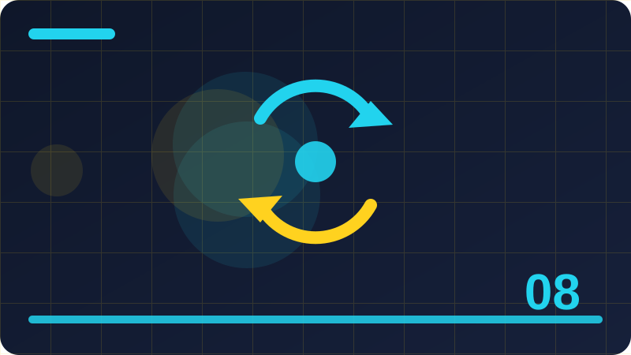

Chapter 8: Loops: while, do-while and for

This chapter teaches loops: while, do-while and for in PHP through short, practical sections that build on each other step by step.
Section 1: Why Loops Matter
This section looks closely at why loops matter, and it matters because it shapes how a PHP program responds to different values instead of always doing exactly the same thing. When you understand this idea, you can write programs that adapt, choose, and handle real situations rather than only printing fixed text. Beginners often rush past this kind of topic, yet it appears in almost every useful script, from a simple greeting page to a small shop, a quiz, or a membership check. The goal here is not to memorise a trick, but to build a clear mental picture you can reuse whenever a similar problem appears in your own work.
In practice, why loops matter works by giving PHP a clear rule to follow and a set of values to test against that rule. You supply the data, PHP checks it in order, and the program then follows the path that matches what it finds. That order matters, because the first matching path is usually the one that runs, and later paths are skipped once a match is found. Think of it as a set of labelled doors: PHP opens the door whose label fits the current value, and it does not need to open every other door. Keeping that picture in mind helps you predict behaviour before you run the code.
A helpful way to learn why loops matter is to start with a tiny, concrete situation you already understand, such as a score, a name, a price, or a simple yes-or-no choice. Write down two or three possible values, decide what should happen for each one, and only then turn those decisions into code. If you can explain the expected result for each value in plain language, the code itself becomes much easier to write and to check. Try the same example with a value at the edge of a range, because edge cases are where small misunderstandings usually show up first.
Common mistakes with why loops matter usually come from rushing, not from difficulty. Learners sometimes mix up similar symbols, forget a closing brace, compare the wrong variable, or assume PHP will guess what they meant when two options look alike. Another frequent slip is testing only the happy path, the value that works nicely, while forgetting the empty value, the zero, or the unexpected input a real user might send. Slow down, name your variables clearly, and test each path separately, including the path that should handle an unusual or missing value.
As you finish this section, ask yourself when why loops matter is the clearest choice and when a different structure would read better. The best tool is not always the shortest one; it is the one a reader can follow without pausing to untangle it. Practise by rewriting a small example in two ways and comparing them for readability, then keep the version that explains itself. That habit, repeated across many small programs, is how you move from writing code that merely runs to writing code that is reliable, maintainable, and genuinely useful in a real project.
<?php
$count = 0;
while ($count < 3) {
echo "Count: $count\n";
$count++;
}
?>Check: In your own words, what does why loops matter mean, and when would you use it in a small PHP program?
Section 2: The while Loop Basics
This section looks closely at the while loop basics, and it matters because it shapes how a PHP program responds to different values instead of always doing exactly the same thing. When you understand this idea, you can write programs that adapt, choose, and handle real situations rather than only printing fixed text. Beginners often rush past this kind of topic, yet it appears in almost every useful script, from a simple greeting page to a small shop, a quiz, or a membership check. The goal here is not to memorise a trick, but to build a clear mental picture you can reuse whenever a similar problem appears in your own work.
In practice, the while loop basics works by giving PHP a clear rule to follow and a set of values to test against that rule. You supply the data, PHP checks it in order, and the program then follows the path that matches what it finds. That order matters, because the first matching path is usually the one that runs, and later paths are skipped once a match is found. Think of it as a set of labelled doors: PHP opens the door whose label fits the current value, and it does not need to open every other door. Keeping that picture in mind helps you predict behaviour before you run the code.
A helpful way to learn the while loop basics is to start with a tiny, concrete situation you already understand, such as a score, a name, a price, or a simple yes-or-no choice. Write down two or three possible values, decide what should happen for each one, and only then turn those decisions into code. If you can explain the expected result for each value in plain language, the code itself becomes much easier to write and to check. Try the same example with a value at the edge of a range, because edge cases are where small misunderstandings usually show up first.
Common mistakes with the while loop basics usually come from rushing, not from difficulty. Learners sometimes mix up similar symbols, forget a closing brace, compare the wrong variable, or assume PHP will guess what they meant when two options look alike. Another frequent slip is testing only the happy path, the value that works nicely, while forgetting the empty value, the zero, or the unexpected input a real user might send. Slow down, name your variables clearly, and test each path separately, including the path that should handle an unusual or missing value.
As you finish this section, ask yourself when the while loop basics is the clearest choice and when a different structure would read better. The best tool is not always the shortest one; it is the one a reader can follow without pausing to untangle it. Practise by rewriting a small example in two ways and comparing them for readability, then keep the version that explains itself. That habit, repeated across many small programs, is how you move from writing code that merely runs to writing code that is reliable, maintainable, and genuinely useful in a real project.
<?php
$n = 1;
do {
echo "Step $n\n";
$n++;
} while ($n <= 3);
?>Check: In your own words, what does the while loop basics mean, and when would you use it in a small PHP program?
Section 3: How while Checks Its Condition
This section looks closely at how while checks its condition, and it matters because it shapes how a PHP program responds to different values instead of always doing exactly the same thing. When you understand this idea, you can write programs that adapt, choose, and handle real situations rather than only printing fixed text. Beginners often rush past this kind of topic, yet it appears in almost every useful script, from a simple greeting page to a small shop, a quiz, or a membership check. The goal here is not to memorise a trick, but to build a clear mental picture you can reuse whenever a similar problem appears in your own work.
In practice, how while checks its condition works by giving PHP a clear rule to follow and a set of values to test against that rule. You supply the data, PHP checks it in order, and the program then follows the path that matches what it finds. That order matters, because the first matching path is usually the one that runs, and later paths are skipped once a match is found. Think of it as a set of labelled doors: PHP opens the door whose label fits the current value, and it does not need to open every other door. Keeping that picture in mind helps you predict behaviour before you run the code.
A helpful way to learn how while checks its condition is to start with a tiny, concrete situation you already understand, such as a score, a name, a price, or a simple yes-or-no choice. Write down two or three possible values, decide what should happen for each one, and only then turn those decisions into code. If you can explain the expected result for each value in plain language, the code itself becomes much easier to write and to check. Try the same example with a value at the edge of a range, because edge cases are where small misunderstandings usually show up first.
Common mistakes with how while checks its condition usually come from rushing, not from difficulty. Learners sometimes mix up similar symbols, forget a closing brace, compare the wrong variable, or assume PHP will guess what they meant when two options look alike. Another frequent slip is testing only the happy path, the value that works nicely, while forgetting the empty value, the zero, or the unexpected input a real user might send. Slow down, name your variables clearly, and test each path separately, including the path that should handle an unusual or missing value.
As you finish this section, ask yourself when how while checks its condition is the clearest choice and when a different structure would read better. The best tool is not always the shortest one; it is the one a reader can follow without pausing to untangle it. Practise by rewriting a small example in two ways and comparing them for readability, then keep the version that explains itself. That habit, repeated across many small programs, is how you move from writing code that merely runs to writing code that is reliable, maintainable, and genuinely useful in a real project.
<?php
for ($i = 1; $i <= 5; $i++) {
echo $i . " ";
}
?>Check: In your own words, what does how while checks its condition mean, and when would you use it in a small PHP program?
Section 4: Counting with while
This section looks closely at counting with while, and it matters because it shapes how a PHP program responds to different values instead of always doing exactly the same thing. When you understand this idea, you can write programs that adapt, choose, and handle real situations rather than only printing fixed text. Beginners often rush past this kind of topic, yet it appears in almost every useful script, from a simple greeting page to a small shop, a quiz, or a membership check. The goal here is not to memorise a trick, but to build a clear mental picture you can reuse whenever a similar problem appears in your own work.
In practice, counting with while works by giving PHP a clear rule to follow and a set of values to test against that rule. You supply the data, PHP checks it in order, and the program then follows the path that matches what it finds. That order matters, because the first matching path is usually the one that runs, and later paths are skipped once a match is found. Think of it as a set of labelled doors: PHP opens the door whose label fits the current value, and it does not need to open every other door. Keeping that picture in mind helps you predict behaviour before you run the code.
A helpful way to learn counting with while is to start with a tiny, concrete situation you already understand, such as a score, a name, a price, or a simple yes-or-no choice. Write down two or three possible values, decide what should happen for each one, and only then turn those decisions into code. If you can explain the expected result for each value in plain language, the code itself becomes much easier to write and to check. Try the same example with a value at the edge of a range, because edge cases are where small misunderstandings usually show up first.
Common mistakes with counting with while usually come from rushing, not from difficulty. Learners sometimes mix up similar symbols, forget a closing brace, compare the wrong variable, or assume PHP will guess what they meant when two options look alike. Another frequent slip is testing only the happy path, the value that works nicely, while forgetting the empty value, the zero, or the unexpected input a real user might send. Slow down, name your variables clearly, and test each path separately, including the path that should handle an unusual or missing value.
As you finish this section, ask yourself when counting with while is the clearest choice and when a different structure would read better. The best tool is not always the shortest one; it is the one a reader can follow without pausing to untangle it. Practise by rewriting a small example in two ways and comparing them for readability, then keep the version that explains itself. That habit, repeated across many small programs, is how you move from writing code that merely runs to writing code that is reliable, maintainable, and genuinely useful in a real project.
<?php
$count = 0;
while ($count < 3) {
echo "Count: $count\n";
$count++;
}
?>Check: In your own words, what does counting with while mean, and when would you use it in a small PHP program?
Section 5: Avoiding Infinite Loops
This section looks closely at avoiding infinite loops, and it matters because it shapes how a PHP program responds to different values instead of always doing exactly the same thing. When you understand this idea, you can write programs that adapt, choose, and handle real situations rather than only printing fixed text. Beginners often rush past this kind of topic, yet it appears in almost every useful script, from a simple greeting page to a small shop, a quiz, or a membership check. The goal here is not to memorise a trick, but to build a clear mental picture you can reuse whenever a similar problem appears in your own work.
In practice, avoiding infinite loops works by giving PHP a clear rule to follow and a set of values to test against that rule. You supply the data, PHP checks it in order, and the program then follows the path that matches what it finds. That order matters, because the first matching path is usually the one that runs, and later paths are skipped once a match is found. Think of it as a set of labelled doors: PHP opens the door whose label fits the current value, and it does not need to open every other door. Keeping that picture in mind helps you predict behaviour before you run the code.
A helpful way to learn avoiding infinite loops is to start with a tiny, concrete situation you already understand, such as a score, a name, a price, or a simple yes-or-no choice. Write down two or three possible values, decide what should happen for each one, and only then turn those decisions into code. If you can explain the expected result for each value in plain language, the code itself becomes much easier to write and to check. Try the same example with a value at the edge of a range, because edge cases are where small misunderstandings usually show up first.
Common mistakes with avoiding infinite loops usually come from rushing, not from difficulty. Learners sometimes mix up similar symbols, forget a closing brace, compare the wrong variable, or assume PHP will guess what they meant when two options look alike. Another frequent slip is testing only the happy path, the value that works nicely, while forgetting the empty value, the zero, or the unexpected input a real user might send. Slow down, name your variables clearly, and test each path separately, including the path that should handle an unusual or missing value.
As you finish this section, ask yourself when avoiding infinite loops is the clearest choice and when a different structure would read better. The best tool is not always the shortest one; it is the one a reader can follow without pausing to untangle it. Practise by rewriting a small example in two ways and comparing them for readability, then keep the version that explains itself. That habit, repeated across many small programs, is how you move from writing code that merely runs to writing code that is reliable, maintainable, and genuinely useful in a real project.
<?php
$n = 1;
do {
echo "Step $n\n";
$n++;
} while ($n <= 3);
?>Check: In your own words, what does avoiding infinite loops mean, and when would you use it in a small PHP program?
Section 6: The do-while Loop Basics
This section looks closely at the do-while loop basics, and it matters because it shapes how a PHP program responds to different values instead of always doing exactly the same thing. When you understand this idea, you can write programs that adapt, choose, and handle real situations rather than only printing fixed text. Beginners often rush past this kind of topic, yet it appears in almost every useful script, from a simple greeting page to a small shop, a quiz, or a membership check. The goal here is not to memorise a trick, but to build a clear mental picture you can reuse whenever a similar problem appears in your own work.
In practice, the do-while loop basics works by giving PHP a clear rule to follow and a set of values to test against that rule. You supply the data, PHP checks it in order, and the program then follows the path that matches what it finds. That order matters, because the first matching path is usually the one that runs, and later paths are skipped once a match is found. Think of it as a set of labelled doors: PHP opens the door whose label fits the current value, and it does not need to open every other door. Keeping that picture in mind helps you predict behaviour before you run the code.
A helpful way to learn the do-while loop basics is to start with a tiny, concrete situation you already understand, such as a score, a name, a price, or a simple yes-or-no choice. Write down two or three possible values, decide what should happen for each one, and only then turn those decisions into code. If you can explain the expected result for each value in plain language, the code itself becomes much easier to write and to check. Try the same example with a value at the edge of a range, because edge cases are where small misunderstandings usually show up first.
Common mistakes with the do-while loop basics usually come from rushing, not from difficulty. Learners sometimes mix up similar symbols, forget a closing brace, compare the wrong variable, or assume PHP will guess what they meant when two options look alike. Another frequent slip is testing only the happy path, the value that works nicely, while forgetting the empty value, the zero, or the unexpected input a real user might send. Slow down, name your variables clearly, and test each path separately, including the path that should handle an unusual or missing value.
As you finish this section, ask yourself when the do-while loop basics is the clearest choice and when a different structure would read better. The best tool is not always the shortest one; it is the one a reader can follow without pausing to untangle it. Practise by rewriting a small example in two ways and comparing them for readability, then keep the version that explains itself. That habit, repeated across many small programs, is how you move from writing code that merely runs to writing code that is reliable, maintainable, and genuinely useful in a real project.
<?php
for ($i = 1; $i <= 5; $i++) {
echo $i . " ";
}
?>Check: In your own words, what does the do-while loop basics mean, and when would you use it in a small PHP program?
Section 7: How do-while Differs from while
This section looks closely at how do-while differs from while, and it matters because it shapes how a PHP program responds to different values instead of always doing exactly the same thing. When you understand this idea, you can write programs that adapt, choose, and handle real situations rather than only printing fixed text. Beginners often rush past this kind of topic, yet it appears in almost every useful script, from a simple greeting page to a small shop, a quiz, or a membership check. The goal here is not to memorise a trick, but to build a clear mental picture you can reuse whenever a similar problem appears in your own work.
In practice, how do-while differs from while works by giving PHP a clear rule to follow and a set of values to test against that rule. You supply the data, PHP checks it in order, and the program then follows the path that matches what it finds. That order matters, because the first matching path is usually the one that runs, and later paths are skipped once a match is found. Think of it as a set of labelled doors: PHP opens the door whose label fits the current value, and it does not need to open every other door. Keeping that picture in mind helps you predict behaviour before you run the code.
A helpful way to learn how do-while differs from while is to start with a tiny, concrete situation you already understand, such as a score, a name, a price, or a simple yes-or-no choice. Write down two or three possible values, decide what should happen for each one, and only then turn those decisions into code. If you can explain the expected result for each value in plain language, the code itself becomes much easier to write and to check. Try the same example with a value at the edge of a range, because edge cases are where small misunderstandings usually show up first.
Common mistakes with how do-while differs from while usually come from rushing, not from difficulty. Learners sometimes mix up similar symbols, forget a closing brace, compare the wrong variable, or assume PHP will guess what they meant when two options look alike. Another frequent slip is testing only the happy path, the value that works nicely, while forgetting the empty value, the zero, or the unexpected input a real user might send. Slow down, name your variables clearly, and test each path separately, including the path that should handle an unusual or missing value.
As you finish this section, ask yourself when how do-while differs from while is the clearest choice and when a different structure would read better. The best tool is not always the shortest one; it is the one a reader can follow without pausing to untangle it. Practise by rewriting a small example in two ways and comparing them for readability, then keep the version that explains itself. That habit, repeated across many small programs, is how you move from writing code that merely runs to writing code that is reliable, maintainable, and genuinely useful in a real project.
<?php
$count = 0;
while ($count < 3) {
echo "Count: $count\n";
$count++;
}
?>Check: In your own words, what does how do-while differs from while mean, and when would you use it in a small PHP program?
Section 8: When do-while Is the Right Choice
This section looks closely at when do-while is the right choice, and it matters because it shapes how a PHP program responds to different values instead of always doing exactly the same thing. When you understand this idea, you can write programs that adapt, choose, and handle real situations rather than only printing fixed text. Beginners often rush past this kind of topic, yet it appears in almost every useful script, from a simple greeting page to a small shop, a quiz, or a membership check. The goal here is not to memorise a trick, but to build a clear mental picture you can reuse whenever a similar problem appears in your own work.
In practice, when do-while is the right choice works by giving PHP a clear rule to follow and a set of values to test against that rule. You supply the data, PHP checks it in order, and the program then follows the path that matches what it finds. That order matters, because the first matching path is usually the one that runs, and later paths are skipped once a match is found. Think of it as a set of labelled doors: PHP opens the door whose label fits the current value, and it does not need to open every other door. Keeping that picture in mind helps you predict behaviour before you run the code.
A helpful way to learn when do-while is the right choice is to start with a tiny, concrete situation you already understand, such as a score, a name, a price, or a simple yes-or-no choice. Write down two or three possible values, decide what should happen for each one, and only then turn those decisions into code. If you can explain the expected result for each value in plain language, the code itself becomes much easier to write and to check. Try the same example with a value at the edge of a range, because edge cases are where small misunderstandings usually show up first.
Common mistakes with when do-while is the right choice usually come from rushing, not from difficulty. Learners sometimes mix up similar symbols, forget a closing brace, compare the wrong variable, or assume PHP will guess what they meant when two options look alike. Another frequent slip is testing only the happy path, the value that works nicely, while forgetting the empty value, the zero, or the unexpected input a real user might send. Slow down, name your variables clearly, and test each path separately, including the path that should handle an unusual or missing value.
As you finish this section, ask yourself when when do-while is the right choice is the clearest choice and when a different structure would read better. The best tool is not always the shortest one; it is the one a reader can follow without pausing to untangle it. Practise by rewriting a small example in two ways and comparing them for readability, then keep the version that explains itself. That habit, repeated across many small programs, is how you move from writing code that merely runs to writing code that is reliable, maintainable, and genuinely useful in a real project.
<?php
$n = 1;
do {
echo "Step $n\n";
$n++;
} while ($n <= 3);
?>Check: In your own words, what does when do-while is the right choice mean, and when would you use it in a small PHP program?
Section 9: The for Loop Basics
This section looks closely at the for loop basics, and it matters because it shapes how a PHP program responds to different values instead of always doing exactly the same thing. When you understand this idea, you can write programs that adapt, choose, and handle real situations rather than only printing fixed text. Beginners often rush past this kind of topic, yet it appears in almost every useful script, from a simple greeting page to a small shop, a quiz, or a membership check. The goal here is not to memorise a trick, but to build a clear mental picture you can reuse whenever a similar problem appears in your own work.
In practice, the for loop basics works by giving PHP a clear rule to follow and a set of values to test against that rule. You supply the data, PHP checks it in order, and the program then follows the path that matches what it finds. That order matters, because the first matching path is usually the one that runs, and later paths are skipped once a match is found. Think of it as a set of labelled doors: PHP opens the door whose label fits the current value, and it does not need to open every other door. Keeping that picture in mind helps you predict behaviour before you run the code.
A helpful way to learn the for loop basics is to start with a tiny, concrete situation you already understand, such as a score, a name, a price, or a simple yes-or-no choice. Write down two or three possible values, decide what should happen for each one, and only then turn those decisions into code. If you can explain the expected result for each value in plain language, the code itself becomes much easier to write and to check. Try the same example with a value at the edge of a range, because edge cases are where small misunderstandings usually show up first.
Common mistakes with the for loop basics usually come from rushing, not from difficulty. Learners sometimes mix up similar symbols, forget a closing brace, compare the wrong variable, or assume PHP will guess what they meant when two options look alike. Another frequent slip is testing only the happy path, the value that works nicely, while forgetting the empty value, the zero, or the unexpected input a real user might send. Slow down, name your variables clearly, and test each path separately, including the path that should handle an unusual or missing value.
As you finish this section, ask yourself when the for loop basics is the clearest choice and when a different structure would read better. The best tool is not always the shortest one; it is the one a reader can follow without pausing to untangle it. Practise by rewriting a small example in two ways and comparing them for readability, then keep the version that explains itself. That habit, repeated across many small programs, is how you move from writing code that merely runs to writing code that is reliable, maintainable, and genuinely useful in a real project.
<?php
for ($i = 1; $i <= 5; $i++) {
echo $i . " ";
}
?>Check: In your own words, what does the for loop basics mean, and when would you use it in a small PHP program?
Section 10: for Loop Header Explained
This section looks closely at for loop header explained, and it matters because it shapes how a PHP program responds to different values instead of always doing exactly the same thing. When you understand this idea, you can write programs that adapt, choose, and handle real situations rather than only printing fixed text. Beginners often rush past this kind of topic, yet it appears in almost every useful script, from a simple greeting page to a small shop, a quiz, or a membership check. The goal here is not to memorise a trick, but to build a clear mental picture you can reuse whenever a similar problem appears in your own work.
In practice, for loop header explained works by giving PHP a clear rule to follow and a set of values to test against that rule. You supply the data, PHP checks it in order, and the program then follows the path that matches what it finds. That order matters, because the first matching path is usually the one that runs, and later paths are skipped once a match is found. Think of it as a set of labelled doors: PHP opens the door whose label fits the current value, and it does not need to open every other door. Keeping that picture in mind helps you predict behaviour before you run the code.
A helpful way to learn for loop header explained is to start with a tiny, concrete situation you already understand, such as a score, a name, a price, or a simple yes-or-no choice. Write down two or three possible values, decide what should happen for each one, and only then turn those decisions into code. If you can explain the expected result for each value in plain language, the code itself becomes much easier to write and to check. Try the same example with a value at the edge of a range, because edge cases are where small misunderstandings usually show up first.
Common mistakes with for loop header explained usually come from rushing, not from difficulty. Learners sometimes mix up similar symbols, forget a closing brace, compare the wrong variable, or assume PHP will guess what they meant when two options look alike. Another frequent slip is testing only the happy path, the value that works nicely, while forgetting the empty value, the zero, or the unexpected input a real user might send. Slow down, name your variables clearly, and test each path separately, including the path that should handle an unusual or missing value.
As you finish this section, ask yourself when for loop header explained is the clearest choice and when a different structure would read better. The best tool is not always the shortest one; it is the one a reader can follow without pausing to untangle it. Practise by rewriting a small example in two ways and comparing them for readability, then keep the version that explains itself. That habit, repeated across many small programs, is how you move from writing code that merely runs to writing code that is reliable, maintainable, and genuinely useful in a real project.
<?php
$count = 0;
while ($count < 3) {
echo "Count: $count\n";
$count++;
}
?>Check: In your own words, what does for loop header explained mean, and when would you use it in a small PHP program?
Section 11: Counting Up with for
This section looks closely at counting up with for, and it matters because it shapes how a PHP program responds to different values instead of always doing exactly the same thing. When you understand this idea, you can write programs that adapt, choose, and handle real situations rather than only printing fixed text. Beginners often rush past this kind of topic, yet it appears in almost every useful script, from a simple greeting page to a small shop, a quiz, or a membership check. The goal here is not to memorise a trick, but to build a clear mental picture you can reuse whenever a similar problem appears in your own work.
In practice, counting up with for works by giving PHP a clear rule to follow and a set of values to test against that rule. You supply the data, PHP checks it in order, and the program then follows the path that matches what it finds. That order matters, because the first matching path is usually the one that runs, and later paths are skipped once a match is found. Think of it as a set of labelled doors: PHP opens the door whose label fits the current value, and it does not need to open every other door. Keeping that picture in mind helps you predict behaviour before you run the code.
A helpful way to learn counting up with for is to start with a tiny, concrete situation you already understand, such as a score, a name, a price, or a simple yes-or-no choice. Write down two or three possible values, decide what should happen for each one, and only then turn those decisions into code. If you can explain the expected result for each value in plain language, the code itself becomes much easier to write and to check. Try the same example with a value at the edge of a range, because edge cases are where small misunderstandings usually show up first.
Common mistakes with counting up with for usually come from rushing, not from difficulty. Learners sometimes mix up similar symbols, forget a closing brace, compare the wrong variable, or assume PHP will guess what they meant when two options look alike. Another frequent slip is testing only the happy path, the value that works nicely, while forgetting the empty value, the zero, or the unexpected input a real user might send. Slow down, name your variables clearly, and test each path separately, including the path that should handle an unusual or missing value.
As you finish this section, ask yourself when counting up with for is the clearest choice and when a different structure would read better. The best tool is not always the shortest one; it is the one a reader can follow without pausing to untangle it. Practise by rewriting a small example in two ways and comparing them for readability, then keep the version that explains itself. That habit, repeated across many small programs, is how you move from writing code that merely runs to writing code that is reliable, maintainable, and genuinely useful in a real project.
<?php
$n = 1;
do {
echo "Step $n\n";
$n++;
} while ($n <= 3);
?>Check: In your own words, what does counting up with for mean, and when would you use it in a small PHP program?
Section 12: Counting Down with for
This section looks closely at counting down with for, and it matters because it shapes how a PHP program responds to different values instead of always doing exactly the same thing. When you understand this idea, you can write programs that adapt, choose, and handle real situations rather than only printing fixed text. Beginners often rush past this kind of topic, yet it appears in almost every useful script, from a simple greeting page to a small shop, a quiz, or a membership check. The goal here is not to memorise a trick, but to build a clear mental picture you can reuse whenever a similar problem appears in your own work.
In practice, counting down with for works by giving PHP a clear rule to follow and a set of values to test against that rule. You supply the data, PHP checks it in order, and the program then follows the path that matches what it finds. That order matters, because the first matching path is usually the one that runs, and later paths are skipped once a match is found. Think of it as a set of labelled doors: PHP opens the door whose label fits the current value, and it does not need to open every other door. Keeping that picture in mind helps you predict behaviour before you run the code.
A helpful way to learn counting down with for is to start with a tiny, concrete situation you already understand, such as a score, a name, a price, or a simple yes-or-no choice. Write down two or three possible values, decide what should happen for each one, and only then turn those decisions into code. If you can explain the expected result for each value in plain language, the code itself becomes much easier to write and to check. Try the same example with a value at the edge of a range, because edge cases are where small misunderstandings usually show up first.
Common mistakes with counting down with for usually come from rushing, not from difficulty. Learners sometimes mix up similar symbols, forget a closing brace, compare the wrong variable, or assume PHP will guess what they meant when two options look alike. Another frequent slip is testing only the happy path, the value that works nicely, while forgetting the empty value, the zero, or the unexpected input a real user might send. Slow down, name your variables clearly, and test each path separately, including the path that should handle an unusual or missing value.
As you finish this section, ask yourself when counting down with for is the clearest choice and when a different structure would read better. The best tool is not always the shortest one; it is the one a reader can follow without pausing to untangle it. Practise by rewriting a small example in two ways and comparing them for readability, then keep the version that explains itself. That habit, repeated across many small programs, is how you move from writing code that merely runs to writing code that is reliable, maintainable, and genuinely useful in a real project.
<?php
for ($i = 1; $i <= 5; $i++) {
echo $i . " ";
}
?>Check: In your own words, what does counting down with for mean, and when would you use it in a small PHP program?
Section 13: Stepping by More Than One
This section looks closely at stepping by more than one, and it matters because it shapes how a PHP program responds to different values instead of always doing exactly the same thing. When you understand this idea, you can write programs that adapt, choose, and handle real situations rather than only printing fixed text. Beginners often rush past this kind of topic, yet it appears in almost every useful script, from a simple greeting page to a small shop, a quiz, or a membership check. The goal here is not to memorise a trick, but to build a clear mental picture you can reuse whenever a similar problem appears in your own work.
In practice, stepping by more than one works by giving PHP a clear rule to follow and a set of values to test against that rule. You supply the data, PHP checks it in order, and the program then follows the path that matches what it finds. That order matters, because the first matching path is usually the one that runs, and later paths are skipped once a match is found. Think of it as a set of labelled doors: PHP opens the door whose label fits the current value, and it does not need to open every other door. Keeping that picture in mind helps you predict behaviour before you run the code.
A helpful way to learn stepping by more than one is to start with a tiny, concrete situation you already understand, such as a score, a name, a price, or a simple yes-or-no choice. Write down two or three possible values, decide what should happen for each one, and only then turn those decisions into code. If you can explain the expected result for each value in plain language, the code itself becomes much easier to write and to check. Try the same example with a value at the edge of a range, because edge cases are where small misunderstandings usually show up first.
Common mistakes with stepping by more than one usually come from rushing, not from difficulty. Learners sometimes mix up similar symbols, forget a closing brace, compare the wrong variable, or assume PHP will guess what they meant when two options look alike. Another frequent slip is testing only the happy path, the value that works nicely, while forgetting the empty value, the zero, or the unexpected input a real user might send. Slow down, name your variables clearly, and test each path separately, including the path that should handle an unusual or missing value.
As you finish this section, ask yourself when stepping by more than one is the clearest choice and when a different structure would read better. The best tool is not always the shortest one; it is the one a reader can follow without pausing to untangle it. Practise by rewriting a small example in two ways and comparing them for readability, then keep the version that explains itself. That habit, repeated across many small programs, is how you move from writing code that merely runs to writing code that is reliable, maintainable, and genuinely useful in a real project.
<?php
$count = 0;
while ($count < 3) {
echo "Count: $count\n";
$count++;
}
?>Check: In your own words, what does stepping by more than one mean, and when would you use it in a small PHP program?
Section 14: Loops and Variables Scope Preview
This section looks closely at loops and variables scope preview, and it matters because it shapes how a PHP program responds to different values instead of always doing exactly the same thing. When you understand this idea, you can write programs that adapt, choose, and handle real situations rather than only printing fixed text. Beginners often rush past this kind of topic, yet it appears in almost every useful script, from a simple greeting page to a small shop, a quiz, or a membership check. The goal here is not to memorise a trick, but to build a clear mental picture you can reuse whenever a similar problem appears in your own work.
In practice, loops and variables scope preview works by giving PHP a clear rule to follow and a set of values to test against that rule. You supply the data, PHP checks it in order, and the program then follows the path that matches what it finds. That order matters, because the first matching path is usually the one that runs, and later paths are skipped once a match is found. Think of it as a set of labelled doors: PHP opens the door whose label fits the current value, and it does not need to open every other door. Keeping that picture in mind helps you predict behaviour before you run the code.
A helpful way to learn loops and variables scope preview is to start with a tiny, concrete situation you already understand, such as a score, a name, a price, or a simple yes-or-no choice. Write down two or three possible values, decide what should happen for each one, and only then turn those decisions into code. If you can explain the expected result for each value in plain language, the code itself becomes much easier to write and to check. Try the same example with a value at the edge of a range, because edge cases are where small misunderstandings usually show up first.
Common mistakes with loops and variables scope preview usually come from rushing, not from difficulty. Learners sometimes mix up similar symbols, forget a closing brace, compare the wrong variable, or assume PHP will guess what they meant when two options look alike. Another frequent slip is testing only the happy path, the value that works nicely, while forgetting the empty value, the zero, or the unexpected input a real user might send. Slow down, name your variables clearly, and test each path separately, including the path that should handle an unusual or missing value.
As you finish this section, ask yourself when loops and variables scope preview is the clearest choice and when a different structure would read better. The best tool is not always the shortest one; it is the one a reader can follow without pausing to untangle it. Practise by rewriting a small example in two ways and comparing them for readability, then keep the version that explains itself. That habit, repeated across many small programs, is how you move from writing code that merely runs to writing code that is reliable, maintainable, and genuinely useful in a real project.
<?php
$n = 1;
do {
echo "Step $n\n";
$n++;
} while ($n <= 3);
?>Check: In your own words, what does loops and variables scope preview mean, and when would you use it in a small PHP program?
Section 15: break to Exit a Loop
This section looks closely at break to exit a loop, and it matters because it shapes how a PHP program responds to different values instead of always doing exactly the same thing. When you understand this idea, you can write programs that adapt, choose, and handle real situations rather than only printing fixed text. Beginners often rush past this kind of topic, yet it appears in almost every useful script, from a simple greeting page to a small shop, a quiz, or a membership check. The goal here is not to memorise a trick, but to build a clear mental picture you can reuse whenever a similar problem appears in your own work.
In practice, break to exit a loop works by giving PHP a clear rule to follow and a set of values to test against that rule. You supply the data, PHP checks it in order, and the program then follows the path that matches what it finds. That order matters, because the first matching path is usually the one that runs, and later paths are skipped once a match is found. Think of it as a set of labelled doors: PHP opens the door whose label fits the current value, and it does not need to open every other door. Keeping that picture in mind helps you predict behaviour before you run the code.
A helpful way to learn break to exit a loop is to start with a tiny, concrete situation you already understand, such as a score, a name, a price, or a simple yes-or-no choice. Write down two or three possible values, decide what should happen for each one, and only then turn those decisions into code. If you can explain the expected result for each value in plain language, the code itself becomes much easier to write and to check. Try the same example with a value at the edge of a range, because edge cases are where small misunderstandings usually show up first.
Common mistakes with break to exit a loop usually come from rushing, not from difficulty. Learners sometimes mix up similar symbols, forget a closing brace, compare the wrong variable, or assume PHP will guess what they meant when two options look alike. Another frequent slip is testing only the happy path, the value that works nicely, while forgetting the empty value, the zero, or the unexpected input a real user might send. Slow down, name your variables clearly, and test each path separately, including the path that should handle an unusual or missing value.
As you finish this section, ask yourself when break to exit a loop is the clearest choice and when a different structure would read better. The best tool is not always the shortest one; it is the one a reader can follow without pausing to untangle it. Practise by rewriting a small example in two ways and comparing them for readability, then keep the version that explains itself. That habit, repeated across many small programs, is how you move from writing code that merely runs to writing code that is reliable, maintainable, and genuinely useful in a real project.
<?php
for ($i = 1; $i <= 5; $i++) {
echo $i . " ";
}
?>Check: In your own words, what does break to exit a loop mean, and when would you use it in a small PHP program?
Section 16: continue to Skip an Iteration
This section looks closely at continue to skip an iteration, and it matters because it shapes how a PHP program responds to different values instead of always doing exactly the same thing. When you understand this idea, you can write programs that adapt, choose, and handle real situations rather than only printing fixed text. Beginners often rush past this kind of topic, yet it appears in almost every useful script, from a simple greeting page to a small shop, a quiz, or a membership check. The goal here is not to memorise a trick, but to build a clear mental picture you can reuse whenever a similar problem appears in your own work.
In practice, continue to skip an iteration works by giving PHP a clear rule to follow and a set of values to test against that rule. You supply the data, PHP checks it in order, and the program then follows the path that matches what it finds. That order matters, because the first matching path is usually the one that runs, and later paths are skipped once a match is found. Think of it as a set of labelled doors: PHP opens the door whose label fits the current value, and it does not need to open every other door. Keeping that picture in mind helps you predict behaviour before you run the code.
A helpful way to learn continue to skip an iteration is to start with a tiny, concrete situation you already understand, such as a score, a name, a price, or a simple yes-or-no choice. Write down two or three possible values, decide what should happen for each one, and only then turn those decisions into code. If you can explain the expected result for each value in plain language, the code itself becomes much easier to write and to check. Try the same example with a value at the edge of a range, because edge cases are where small misunderstandings usually show up first.
Common mistakes with continue to skip an iteration usually come from rushing, not from difficulty. Learners sometimes mix up similar symbols, forget a closing brace, compare the wrong variable, or assume PHP will guess what they meant when two options look alike. Another frequent slip is testing only the happy path, the value that works nicely, while forgetting the empty value, the zero, or the unexpected input a real user might send. Slow down, name your variables clearly, and test each path separately, including the path that should handle an unusual or missing value.
As you finish this section, ask yourself when continue to skip an iteration is the clearest choice and when a different structure would read better. The best tool is not always the shortest one; it is the one a reader can follow without pausing to untangle it. Practise by rewriting a small example in two ways and comparing them for readability, then keep the version that explains itself. That habit, repeated across many small programs, is how you move from writing code that merely runs to writing code that is reliable, maintainable, and genuinely useful in a real project.
<?php
$count = 0;
while ($count < 3) {
echo "Count: $count\n";
$count++;
}
?>Check: In your own words, what does continue to skip an iteration mean, and when would you use it in a small PHP program?
Section 17: Nested Loops Explained
This section looks closely at nested loops explained, and it matters because it shapes how a PHP program responds to different values instead of always doing exactly the same thing. When you understand this idea, you can write programs that adapt, choose, and handle real situations rather than only printing fixed text. Beginners often rush past this kind of topic, yet it appears in almost every useful script, from a simple greeting page to a small shop, a quiz, or a membership check. The goal here is not to memorise a trick, but to build a clear mental picture you can reuse whenever a similar problem appears in your own work.
In practice, nested loops explained works by giving PHP a clear rule to follow and a set of values to test against that rule. You supply the data, PHP checks it in order, and the program then follows the path that matches what it finds. That order matters, because the first matching path is usually the one that runs, and later paths are skipped once a match is found. Think of it as a set of labelled doors: PHP opens the door whose label fits the current value, and it does not need to open every other door. Keeping that picture in mind helps you predict behaviour before you run the code.
A helpful way to learn nested loops explained is to start with a tiny, concrete situation you already understand, such as a score, a name, a price, or a simple yes-or-no choice. Write down two or three possible values, decide what should happen for each one, and only then turn those decisions into code. If you can explain the expected result for each value in plain language, the code itself becomes much easier to write and to check. Try the same example with a value at the edge of a range, because edge cases are where small misunderstandings usually show up first.
Common mistakes with nested loops explained usually come from rushing, not from difficulty. Learners sometimes mix up similar symbols, forget a closing brace, compare the wrong variable, or assume PHP will guess what they meant when two options look alike. Another frequent slip is testing only the happy path, the value that works nicely, while forgetting the empty value, the zero, or the unexpected input a real user might send. Slow down, name your variables clearly, and test each path separately, including the path that should handle an unusual or missing value.
As you finish this section, ask yourself when nested loops explained is the clearest choice and when a different structure would read better. The best tool is not always the shortest one; it is the one a reader can follow without pausing to untangle it. Practise by rewriting a small example in two ways and comparing them for readability, then keep the version that explains itself. That habit, repeated across many small programs, is how you move from writing code that merely runs to writing code that is reliable, maintainable, and genuinely useful in a real project.
<?php
$n = 1;
do {
echo "Step $n\n";
$n++;
} while ($n <= 3);
?>Check: In your own words, what does nested loops explained mean, and when would you use it in a small PHP program?
Section 18: Loops Inside Loops in Practice
This section looks closely at loops inside loops in practice, and it matters because it shapes how a PHP program responds to different values instead of always doing exactly the same thing. When you understand this idea, you can write programs that adapt, choose, and handle real situations rather than only printing fixed text. Beginners often rush past this kind of topic, yet it appears in almost every useful script, from a simple greeting page to a small shop, a quiz, or a membership check. The goal here is not to memorise a trick, but to build a clear mental picture you can reuse whenever a similar problem appears in your own work.
In practice, loops inside loops in practice works by giving PHP a clear rule to follow and a set of values to test against that rule. You supply the data, PHP checks it in order, and the program then follows the path that matches what it finds. That order matters, because the first matching path is usually the one that runs, and later paths are skipped once a match is found. Think of it as a set of labelled doors: PHP opens the door whose label fits the current value, and it does not need to open every other door. Keeping that picture in mind helps you predict behaviour before you run the code.
A helpful way to learn loops inside loops in practice is to start with a tiny, concrete situation you already understand, such as a score, a name, a price, or a simple yes-or-no choice. Write down two or three possible values, decide what should happen for each one, and only then turn those decisions into code. If you can explain the expected result for each value in plain language, the code itself becomes much easier to write and to check. Try the same example with a value at the edge of a range, because edge cases are where small misunderstandings usually show up first.
Common mistakes with loops inside loops in practice usually come from rushing, not from difficulty. Learners sometimes mix up similar symbols, forget a closing brace, compare the wrong variable, or assume PHP will guess what they meant when two options look alike. Another frequent slip is testing only the happy path, the value that works nicely, while forgetting the empty value, the zero, or the unexpected input a real user might send. Slow down, name your variables clearly, and test each path separately, including the path that should handle an unusual or missing value.
As you finish this section, ask yourself when loops inside loops in practice is the clearest choice and when a different structure would read better. The best tool is not always the shortest one; it is the one a reader can follow without pausing to untangle it. Practise by rewriting a small example in two ways and comparing them for readability, then keep the version that explains itself. That habit, repeated across many small programs, is how you move from writing code that merely runs to writing code that is reliable, maintainable, and genuinely useful in a real project.
<?php
for ($i = 1; $i <= 5; $i++) {
echo $i . " ";
}
?>Check: In your own words, what does loops inside loops in practice mean, and when would you use it in a small PHP program?
Section 19: While Loops with User Input Preview
This section looks closely at while loops with user input preview, and it matters because it shapes how a PHP program responds to different values instead of always doing exactly the same thing. When you understand this idea, you can write programs that adapt, choose, and handle real situations rather than only printing fixed text. Beginners often rush past this kind of topic, yet it appears in almost every useful script, from a simple greeting page to a small shop, a quiz, or a membership check. The goal here is not to memorise a trick, but to build a clear mental picture you can reuse whenever a similar problem appears in your own work.
In practice, while loops with user input preview works by giving PHP a clear rule to follow and a set of values to test against that rule. You supply the data, PHP checks it in order, and the program then follows the path that matches what it finds. That order matters, because the first matching path is usually the one that runs, and later paths are skipped once a match is found. Think of it as a set of labelled doors: PHP opens the door whose label fits the current value, and it does not need to open every other door. Keeping that picture in mind helps you predict behaviour before you run the code.
A helpful way to learn while loops with user input preview is to start with a tiny, concrete situation you already understand, such as a score, a name, a price, or a simple yes-or-no choice. Write down two or three possible values, decide what should happen for each one, and only then turn those decisions into code. If you can explain the expected result for each value in plain language, the code itself becomes much easier to write and to check. Try the same example with a value at the edge of a range, because edge cases are where small misunderstandings usually show up first.
Common mistakes with while loops with user input preview usually come from rushing, not from difficulty. Learners sometimes mix up similar symbols, forget a closing brace, compare the wrong variable, or assume PHP will guess what they meant when two options look alike. Another frequent slip is testing only the happy path, the value that works nicely, while forgetting the empty value, the zero, or the unexpected input a real user might send. Slow down, name your variables clearly, and test each path separately, including the path that should handle an unusual or missing value.
As you finish this section, ask yourself when while loops with user input preview is the clearest choice and when a different structure would read better. The best tool is not always the shortest one; it is the one a reader can follow without pausing to untangle it. Practise by rewriting a small example in two ways and comparing them for readability, then keep the version that explains itself. That habit, repeated across many small programs, is how you move from writing code that merely runs to writing code that is reliable, maintainable, and genuinely useful in a real project.
<?php
$count = 0;
while ($count < 3) {
echo "Count: $count\n";
$count++;
}
?>Check: In your own words, what does while loops with user input preview mean, and when would you use it in a small PHP program?
Section 20: Sentinel Values in Loops
This section looks closely at sentinel values in loops, and it matters because it shapes how a PHP program responds to different values instead of always doing exactly the same thing. When you understand this idea, you can write programs that adapt, choose, and handle real situations rather than only printing fixed text. Beginners often rush past this kind of topic, yet it appears in almost every useful script, from a simple greeting page to a small shop, a quiz, or a membership check. The goal here is not to memorise a trick, but to build a clear mental picture you can reuse whenever a similar problem appears in your own work.
In practice, sentinel values in loops works by giving PHP a clear rule to follow and a set of values to test against that rule. You supply the data, PHP checks it in order, and the program then follows the path that matches what it finds. That order matters, because the first matching path is usually the one that runs, and later paths are skipped once a match is found. Think of it as a set of labelled doors: PHP opens the door whose label fits the current value, and it does not need to open every other door. Keeping that picture in mind helps you predict behaviour before you run the code.
A helpful way to learn sentinel values in loops is to start with a tiny, concrete situation you already understand, such as a score, a name, a price, or a simple yes-or-no choice. Write down two or three possible values, decide what should happen for each one, and only then turn those decisions into code. If you can explain the expected result for each value in plain language, the code itself becomes much easier to write and to check. Try the same example with a value at the edge of a range, because edge cases are where small misunderstandings usually show up first.
Common mistakes with sentinel values in loops usually come from rushing, not from difficulty. Learners sometimes mix up similar symbols, forget a closing brace, compare the wrong variable, or assume PHP will guess what they meant when two options look alike. Another frequent slip is testing only the happy path, the value that works nicely, while forgetting the empty value, the zero, or the unexpected input a real user might send. Slow down, name your variables clearly, and test each path separately, including the path that should handle an unusual or missing value.
As you finish this section, ask yourself when sentinel values in loops is the clearest choice and when a different structure would read better. The best tool is not always the shortest one; it is the one a reader can follow without pausing to untangle it. Practise by rewriting a small example in two ways and comparing them for readability, then keep the version that explains itself. That habit, repeated across many small programs, is how you move from writing code that merely runs to writing code that is reliable, maintainable, and genuinely useful in a real project.
<?php
$n = 1;
do {
echo "Step $n\n";
$n++;
} while ($n <= 3);
?>Check: In your own words, what does sentinel values in loops mean, and when would you use it in a small PHP program?
Section 21: Accumulating a Total in a Loop
This section looks closely at accumulating a total in a loop, and it matters because it shapes how a PHP program responds to different values instead of always doing exactly the same thing. When you understand this idea, you can write programs that adapt, choose, and handle real situations rather than only printing fixed text. Beginners often rush past this kind of topic, yet it appears in almost every useful script, from a simple greeting page to a small shop, a quiz, or a membership check. The goal here is not to memorise a trick, but to build a clear mental picture you can reuse whenever a similar problem appears in your own work.
In practice, accumulating a total in a loop works by giving PHP a clear rule to follow and a set of values to test against that rule. You supply the data, PHP checks it in order, and the program then follows the path that matches what it finds. That order matters, because the first matching path is usually the one that runs, and later paths are skipped once a match is found. Think of it as a set of labelled doors: PHP opens the door whose label fits the current value, and it does not need to open every other door. Keeping that picture in mind helps you predict behaviour before you run the code.
A helpful way to learn accumulating a total in a loop is to start with a tiny, concrete situation you already understand, such as a score, a name, a price, or a simple yes-or-no choice. Write down two or three possible values, decide what should happen for each one, and only then turn those decisions into code. If you can explain the expected result for each value in plain language, the code itself becomes much easier to write and to check. Try the same example with a value at the edge of a range, because edge cases are where small misunderstandings usually show up first.
Common mistakes with accumulating a total in a loop usually come from rushing, not from difficulty. Learners sometimes mix up similar symbols, forget a closing brace, compare the wrong variable, or assume PHP will guess what they meant when two options look alike. Another frequent slip is testing only the happy path, the value that works nicely, while forgetting the empty value, the zero, or the unexpected input a real user might send. Slow down, name your variables clearly, and test each path separately, including the path that should handle an unusual or missing value.
As you finish this section, ask yourself when accumulating a total in a loop is the clearest choice and when a different structure would read better. The best tool is not always the shortest one; it is the one a reader can follow without pausing to untangle it. Practise by rewriting a small example in two ways and comparing them for readability, then keep the version that explains itself. That habit, repeated across many small programs, is how you move from writing code that merely runs to writing code that is reliable, maintainable, and genuinely useful in a real project.
<?php
for ($i = 1; $i <= 5; $i++) {
echo $i . " ";
}
?>Check: In your own words, what does accumulating a total in a loop mean, and when would you use it in a small PHP program?
Section 22: Finding a Maximum in a Loop
This section looks closely at finding a maximum in a loop, and it matters because it shapes how a PHP program responds to different values instead of always doing exactly the same thing. When you understand this idea, you can write programs that adapt, choose, and handle real situations rather than only printing fixed text. Beginners often rush past this kind of topic, yet it appears in almost every useful script, from a simple greeting page to a small shop, a quiz, or a membership check. The goal here is not to memorise a trick, but to build a clear mental picture you can reuse whenever a similar problem appears in your own work.
In practice, finding a maximum in a loop works by giving PHP a clear rule to follow and a set of values to test against that rule. You supply the data, PHP checks it in order, and the program then follows the path that matches what it finds. That order matters, because the first matching path is usually the one that runs, and later paths are skipped once a match is found. Think of it as a set of labelled doors: PHP opens the door whose label fits the current value, and it does not need to open every other door. Keeping that picture in mind helps you predict behaviour before you run the code.
A helpful way to learn finding a maximum in a loop is to start with a tiny, concrete situation you already understand, such as a score, a name, a price, or a simple yes-or-no choice. Write down two or three possible values, decide what should happen for each one, and only then turn those decisions into code. If you can explain the expected result for each value in plain language, the code itself becomes much easier to write and to check. Try the same example with a value at the edge of a range, because edge cases are where small misunderstandings usually show up first.
Common mistakes with finding a maximum in a loop usually come from rushing, not from difficulty. Learners sometimes mix up similar symbols, forget a closing brace, compare the wrong variable, or assume PHP will guess what they meant when two options look alike. Another frequent slip is testing only the happy path, the value that works nicely, while forgetting the empty value, the zero, or the unexpected input a real user might send. Slow down, name your variables clearly, and test each path separately, including the path that should handle an unusual or missing value.
As you finish this section, ask yourself when finding a maximum in a loop is the clearest choice and when a different structure would read better. The best tool is not always the shortest one; it is the one a reader can follow without pausing to untangle it. Practise by rewriting a small example in two ways and comparing them for readability, then keep the version that explains itself. That habit, repeated across many small programs, is how you move from writing code that merely runs to writing code that is reliable, maintainable, and genuinely useful in a real project.
<?php
$count = 0;
while ($count < 3) {
echo "Count: $count\n";
$count++;
}
?>Check: In your own words, what does finding a maximum in a loop mean, and when would you use it in a small PHP program?
Section 23: Building Strings in a Loop
This section looks closely at building strings in a loop, and it matters because it shapes how a PHP program responds to different values instead of always doing exactly the same thing. When you understand this idea, you can write programs that adapt, choose, and handle real situations rather than only printing fixed text. Beginners often rush past this kind of topic, yet it appears in almost every useful script, from a simple greeting page to a small shop, a quiz, or a membership check. The goal here is not to memorise a trick, but to build a clear mental picture you can reuse whenever a similar problem appears in your own work.
In practice, building strings in a loop works by giving PHP a clear rule to follow and a set of values to test against that rule. You supply the data, PHP checks it in order, and the program then follows the path that matches what it finds. That order matters, because the first matching path is usually the one that runs, and later paths are skipped once a match is found. Think of it as a set of labelled doors: PHP opens the door whose label fits the current value, and it does not need to open every other door. Keeping that picture in mind helps you predict behaviour before you run the code.
A helpful way to learn building strings in a loop is to start with a tiny, concrete situation you already understand, such as a score, a name, a price, or a simple yes-or-no choice. Write down two or three possible values, decide what should happen for each one, and only then turn those decisions into code. If you can explain the expected result for each value in plain language, the code itself becomes much easier to write and to check. Try the same example with a value at the edge of a range, because edge cases are where small misunderstandings usually show up first.
Common mistakes with building strings in a loop usually come from rushing, not from difficulty. Learners sometimes mix up similar symbols, forget a closing brace, compare the wrong variable, or assume PHP will guess what they meant when two options look alike. Another frequent slip is testing only the happy path, the value that works nicely, while forgetting the empty value, the zero, or the unexpected input a real user might send. Slow down, name your variables clearly, and test each path separately, including the path that should handle an unusual or missing value.
As you finish this section, ask yourself when building strings in a loop is the clearest choice and when a different structure would read better. The best tool is not always the shortest one; it is the one a reader can follow without pausing to untangle it. Practise by rewriting a small example in two ways and comparing them for readability, then keep the version that explains itself. That habit, repeated across many small programs, is how you move from writing code that merely runs to writing code that is reliable, maintainable, and genuinely useful in a real project.
<?php
$n = 1;
do {
echo "Step $n\n";
$n++;
} while ($n <= 3);
?>Check: In your own words, what does building strings in a loop mean, and when would you use it in a small PHP program?
Section 24: Loops for Repeating Output
This section looks closely at loops for repeating output, and it matters because it shapes how a PHP program responds to different values instead of always doing exactly the same thing. When you understand this idea, you can write programs that adapt, choose, and handle real situations rather than only printing fixed text. Beginners often rush past this kind of topic, yet it appears in almost every useful script, from a simple greeting page to a small shop, a quiz, or a membership check. The goal here is not to memorise a trick, but to build a clear mental picture you can reuse whenever a similar problem appears in your own work.
In practice, loops for repeating output works by giving PHP a clear rule to follow and a set of values to test against that rule. You supply the data, PHP checks it in order, and the program then follows the path that matches what it finds. That order matters, because the first matching path is usually the one that runs, and later paths are skipped once a match is found. Think of it as a set of labelled doors: PHP opens the door whose label fits the current value, and it does not need to open every other door. Keeping that picture in mind helps you predict behaviour before you run the code.
A helpful way to learn loops for repeating output is to start with a tiny, concrete situation you already understand, such as a score, a name, a price, or a simple yes-or-no choice. Write down two or three possible values, decide what should happen for each one, and only then turn those decisions into code. If you can explain the expected result for each value in plain language, the code itself becomes much easier to write and to check. Try the same example with a value at the edge of a range, because edge cases are where small misunderstandings usually show up first.
Common mistakes with loops for repeating output usually come from rushing, not from difficulty. Learners sometimes mix up similar symbols, forget a closing brace, compare the wrong variable, or assume PHP will guess what they meant when two options look alike. Another frequent slip is testing only the happy path, the value that works nicely, while forgetting the empty value, the zero, or the unexpected input a real user might send. Slow down, name your variables clearly, and test each path separately, including the path that should handle an unusual or missing value.
As you finish this section, ask yourself when loops for repeating output is the clearest choice and when a different structure would read better. The best tool is not always the shortest one; it is the one a reader can follow without pausing to untangle it. Practise by rewriting a small example in two ways and comparing them for readability, then keep the version that explains itself. That habit, repeated across many small programs, is how you move from writing code that merely runs to writing code that is reliable, maintainable, and genuinely useful in a real project.
<?php
for ($i = 1; $i <= 5; $i++) {
echo $i . " ";
}
?>Check: In your own words, what does loops for repeating output mean, and when would you use it in a small PHP program?
Section 25: Loop Conditions That Change
This section looks closely at loop conditions that change, and it matters because it shapes how a PHP program responds to different values instead of always doing exactly the same thing. When you understand this idea, you can write programs that adapt, choose, and handle real situations rather than only printing fixed text. Beginners often rush past this kind of topic, yet it appears in almost every useful script, from a simple greeting page to a small shop, a quiz, or a membership check. The goal here is not to memorise a trick, but to build a clear mental picture you can reuse whenever a similar problem appears in your own work.
In practice, loop conditions that change works by giving PHP a clear rule to follow and a set of values to test against that rule. You supply the data, PHP checks it in order, and the program then follows the path that matches what it finds. That order matters, because the first matching path is usually the one that runs, and later paths are skipped once a match is found. Think of it as a set of labelled doors: PHP opens the door whose label fits the current value, and it does not need to open every other door. Keeping that picture in mind helps you predict behaviour before you run the code.
A helpful way to learn loop conditions that change is to start with a tiny, concrete situation you already understand, such as a score, a name, a price, or a simple yes-or-no choice. Write down two or three possible values, decide what should happen for each one, and only then turn those decisions into code. If you can explain the expected result for each value in plain language, the code itself becomes much easier to write and to check. Try the same example with a value at the edge of a range, because edge cases are where small misunderstandings usually show up first.
Common mistakes with loop conditions that change usually come from rushing, not from difficulty. Learners sometimes mix up similar symbols, forget a closing brace, compare the wrong variable, or assume PHP will guess what they meant when two options look alike. Another frequent slip is testing only the happy path, the value that works nicely, while forgetting the empty value, the zero, or the unexpected input a real user might send. Slow down, name your variables clearly, and test each path separately, including the path that should handle an unusual or missing value.
As you finish this section, ask yourself when loop conditions that change is the clearest choice and when a different structure would read better. The best tool is not always the shortest one; it is the one a reader can follow without pausing to untangle it. Practise by rewriting a small example in two ways and comparing them for readability, then keep the version that explains itself. That habit, repeated across many small programs, is how you move from writing code that merely runs to writing code that is reliable, maintainable, and genuinely useful in a real project.
<?php
$count = 0;
while ($count < 3) {
echo "Count: $count\n";
$count++;
}
?>Check: In your own words, what does loop conditions that change mean, and when would you use it in a small PHP program?
Section 26: Off-by-One Errors
This section looks closely at off-by-one errors, and it matters because it shapes how a PHP program responds to different values instead of always doing exactly the same thing. When you understand this idea, you can write programs that adapt, choose, and handle real situations rather than only printing fixed text. Beginners often rush past this kind of topic, yet it appears in almost every useful script, from a simple greeting page to a small shop, a quiz, or a membership check. The goal here is not to memorise a trick, but to build a clear mental picture you can reuse whenever a similar problem appears in your own work.
In practice, off-by-one errors works by giving PHP a clear rule to follow and a set of values to test against that rule. You supply the data, PHP checks it in order, and the program then follows the path that matches what it finds. That order matters, because the first matching path is usually the one that runs, and later paths are skipped once a match is found. Think of it as a set of labelled doors: PHP opens the door whose label fits the current value, and it does not need to open every other door. Keeping that picture in mind helps you predict behaviour before you run the code.
A helpful way to learn off-by-one errors is to start with a tiny, concrete situation you already understand, such as a score, a name, a price, or a simple yes-or-no choice. Write down two or three possible values, decide what should happen for each one, and only then turn those decisions into code. If you can explain the expected result for each value in plain language, the code itself becomes much easier to write and to check. Try the same example with a value at the edge of a range, because edge cases are where small misunderstandings usually show up first.
Common mistakes with off-by-one errors usually come from rushing, not from difficulty. Learners sometimes mix up similar symbols, forget a closing brace, compare the wrong variable, or assume PHP will guess what they meant when two options look alike. Another frequent slip is testing only the happy path, the value that works nicely, while forgetting the empty value, the zero, or the unexpected input a real user might send. Slow down, name your variables clearly, and test each path separately, including the path that should handle an unusual or missing value.
As you finish this section, ask yourself when off-by-one errors is the clearest choice and when a different structure would read better. The best tool is not always the shortest one; it is the one a reader can follow without pausing to untangle it. Practise by rewriting a small example in two ways and comparing them for readability, then keep the version that explains itself. That habit, repeated across many small programs, is how you move from writing code that merely runs to writing code that is reliable, maintainable, and genuinely useful in a real project.
<?php
$n = 1;
do {
echo "Step $n\n";
$n++;
} while ($n <= 3);
?>Check: In your own words, what does off-by-one errors mean, and when would you use it in a small PHP program?
Section 27: Debugging a Loop That Runs Once
This section looks closely at debugging a loop that runs once, and it matters because it shapes how a PHP program responds to different values instead of always doing exactly the same thing. When you understand this idea, you can write programs that adapt, choose, and handle real situations rather than only printing fixed text. Beginners often rush past this kind of topic, yet it appears in almost every useful script, from a simple greeting page to a small shop, a quiz, or a membership check. The goal here is not to memorise a trick, but to build a clear mental picture you can reuse whenever a similar problem appears in your own work.
In practice, debugging a loop that runs once works by giving PHP a clear rule to follow and a set of values to test against that rule. You supply the data, PHP checks it in order, and the program then follows the path that matches what it finds. That order matters, because the first matching path is usually the one that runs, and later paths are skipped once a match is found. Think of it as a set of labelled doors: PHP opens the door whose label fits the current value, and it does not need to open every other door. Keeping that picture in mind helps you predict behaviour before you run the code.
A helpful way to learn debugging a loop that runs once is to start with a tiny, concrete situation you already understand, such as a score, a name, a price, or a simple yes-or-no choice. Write down two or three possible values, decide what should happen for each one, and only then turn those decisions into code. If you can explain the expected result for each value in plain language, the code itself becomes much easier to write and to check. Try the same example with a value at the edge of a range, because edge cases are where small misunderstandings usually show up first.
Common mistakes with debugging a loop that runs once usually come from rushing, not from difficulty. Learners sometimes mix up similar symbols, forget a closing brace, compare the wrong variable, or assume PHP will guess what they meant when two options look alike. Another frequent slip is testing only the happy path, the value that works nicely, while forgetting the empty value, the zero, or the unexpected input a real user might send. Slow down, name your variables clearly, and test each path separately, including the path that should handle an unusual or missing value.
As you finish this section, ask yourself when debugging a loop that runs once is the clearest choice and when a different structure would read better. The best tool is not always the shortest one; it is the one a reader can follow without pausing to untangle it. Practise by rewriting a small example in two ways and comparing them for readability, then keep the version that explains itself. That habit, repeated across many small programs, is how you move from writing code that merely runs to writing code that is reliable, maintainable, and genuinely useful in a real project.
<?php
for ($i = 1; $i <= 5; $i++) {
echo $i . " ";
}
?>Check: In your own words, what does debugging a loop that runs once mean, and when would you use it in a small PHP program?
Section 28: Debugging a Loop That Never Runs
This section looks closely at debugging a loop that never runs, and it matters because it shapes how a PHP program responds to different values instead of always doing exactly the same thing. When you understand this idea, you can write programs that adapt, choose, and handle real situations rather than only printing fixed text. Beginners often rush past this kind of topic, yet it appears in almost every useful script, from a simple greeting page to a small shop, a quiz, or a membership check. The goal here is not to memorise a trick, but to build a clear mental picture you can reuse whenever a similar problem appears in your own work.
In practice, debugging a loop that never runs works by giving PHP a clear rule to follow and a set of values to test against that rule. You supply the data, PHP checks it in order, and the program then follows the path that matches what it finds. That order matters, because the first matching path is usually the one that runs, and later paths are skipped once a match is found. Think of it as a set of labelled doors: PHP opens the door whose label fits the current value, and it does not need to open every other door. Keeping that picture in mind helps you predict behaviour before you run the code.
A helpful way to learn debugging a loop that never runs is to start with a tiny, concrete situation you already understand, such as a score, a name, a price, or a simple yes-or-no choice. Write down two or three possible values, decide what should happen for each one, and only then turn those decisions into code. If you can explain the expected result for each value in plain language, the code itself becomes much easier to write and to check. Try the same example with a value at the edge of a range, because edge cases are where small misunderstandings usually show up first.
Common mistakes with debugging a loop that never runs usually come from rushing, not from difficulty. Learners sometimes mix up similar symbols, forget a closing brace, compare the wrong variable, or assume PHP will guess what they meant when two options look alike. Another frequent slip is testing only the happy path, the value that works nicely, while forgetting the empty value, the zero, or the unexpected input a real user might send. Slow down, name your variables clearly, and test each path separately, including the path that should handle an unusual or missing value.
As you finish this section, ask yourself when debugging a loop that never runs is the clearest choice and when a different structure would read better. The best tool is not always the shortest one; it is the one a reader can follow without pausing to untangle it. Practise by rewriting a small example in two ways and comparing them for readability, then keep the version that explains itself. That habit, repeated across many small programs, is how you move from writing code that merely runs to writing code that is reliable, maintainable, and genuinely useful in a real project.
<?php
$count = 0;
while ($count < 3) {
echo "Count: $count\n";
$count++;
}
?>Check: In your own words, what does debugging a loop that never runs mean, and when would you use it in a small PHP program?
Section 29: Loops and Arrays Preview
This section looks closely at loops and arrays preview, and it matters because it shapes how a PHP program responds to different values instead of always doing exactly the same thing. When you understand this idea, you can write programs that adapt, choose, and handle real situations rather than only printing fixed text. Beginners often rush past this kind of topic, yet it appears in almost every useful script, from a simple greeting page to a small shop, a quiz, or a membership check. The goal here is not to memorise a trick, but to build a clear mental picture you can reuse whenever a similar problem appears in your own work.
In practice, loops and arrays preview works by giving PHP a clear rule to follow and a set of values to test against that rule. You supply the data, PHP checks it in order, and the program then follows the path that matches what it finds. That order matters, because the first matching path is usually the one that runs, and later paths are skipped once a match is found. Think of it as a set of labelled doors: PHP opens the door whose label fits the current value, and it does not need to open every other door. Keeping that picture in mind helps you predict behaviour before you run the code.
A helpful way to learn loops and arrays preview is to start with a tiny, concrete situation you already understand, such as a score, a name, a price, or a simple yes-or-no choice. Write down two or three possible values, decide what should happen for each one, and only then turn those decisions into code. If you can explain the expected result for each value in plain language, the code itself becomes much easier to write and to check. Try the same example with a value at the edge of a range, because edge cases are where small misunderstandings usually show up first.
Common mistakes with loops and arrays preview usually come from rushing, not from difficulty. Learners sometimes mix up similar symbols, forget a closing brace, compare the wrong variable, or assume PHP will guess what they meant when two options look alike. Another frequent slip is testing only the happy path, the value that works nicely, while forgetting the empty value, the zero, or the unexpected input a real user might send. Slow down, name your variables clearly, and test each path separately, including the path that should handle an unusual or missing value.
As you finish this section, ask yourself when loops and arrays preview is the clearest choice and when a different structure would read better. The best tool is not always the shortest one; it is the one a reader can follow without pausing to untangle it. Practise by rewriting a small example in two ways and comparing them for readability, then keep the version that explains itself. That habit, repeated across many small programs, is how you move from writing code that merely runs to writing code that is reliable, maintainable, and genuinely useful in a real project.
<?php
$n = 1;
do {
echo "Step $n\n";
$n++;
} while ($n <= 3);
?>Check: In your own words, what does loops and arrays preview mean, and when would you use it in a small PHP program?
Section 30: Using for with Array Indexes
This section looks closely at using for with array indexes, and it matters because it shapes how a PHP program responds to different values instead of always doing exactly the same thing. When you understand this idea, you can write programs that adapt, choose, and handle real situations rather than only printing fixed text. Beginners often rush past this kind of topic, yet it appears in almost every useful script, from a simple greeting page to a small shop, a quiz, or a membership check. The goal here is not to memorise a trick, but to build a clear mental picture you can reuse whenever a similar problem appears in your own work.
In practice, using for with array indexes works by giving PHP a clear rule to follow and a set of values to test against that rule. You supply the data, PHP checks it in order, and the program then follows the path that matches what it finds. That order matters, because the first matching path is usually the one that runs, and later paths are skipped once a match is found. Think of it as a set of labelled doors: PHP opens the door whose label fits the current value, and it does not need to open every other door. Keeping that picture in mind helps you predict behaviour before you run the code.
A helpful way to learn using for with array indexes is to start with a tiny, concrete situation you already understand, such as a score, a name, a price, or a simple yes-or-no choice. Write down two or three possible values, decide what should happen for each one, and only then turn those decisions into code. If you can explain the expected result for each value in plain language, the code itself becomes much easier to write and to check. Try the same example with a value at the edge of a range, because edge cases are where small misunderstandings usually show up first.
Common mistakes with using for with array indexes usually come from rushing, not from difficulty. Learners sometimes mix up similar symbols, forget a closing brace, compare the wrong variable, or assume PHP will guess what they meant when two options look alike. Another frequent slip is testing only the happy path, the value that works nicely, while forgetting the empty value, the zero, or the unexpected input a real user might send. Slow down, name your variables clearly, and test each path separately, including the path that should handle an unusual or missing value.
As you finish this section, ask yourself when using for with array indexes is the clearest choice and when a different structure would read better. The best tool is not always the shortest one; it is the one a reader can follow without pausing to untangle it. Practise by rewriting a small example in two ways and comparing them for readability, then keep the version that explains itself. That habit, repeated across many small programs, is how you move from writing code that merely runs to writing code that is reliable, maintainable, and genuinely useful in a real project.
<?php
for ($i = 1; $i <= 5; $i++) {
echo $i . " ";
}
?>Check: In your own words, what does using for with array indexes mean, and when would you use it in a small PHP program?
Section 31: Loop Counters and Naming
This section looks closely at loop counters and naming, and it matters because it shapes how a PHP program responds to different values instead of always doing exactly the same thing. When you understand this idea, you can write programs that adapt, choose, and handle real situations rather than only printing fixed text. Beginners often rush past this kind of topic, yet it appears in almost every useful script, from a simple greeting page to a small shop, a quiz, or a membership check. The goal here is not to memorise a trick, but to build a clear mental picture you can reuse whenever a similar problem appears in your own work.
In practice, loop counters and naming works by giving PHP a clear rule to follow and a set of values to test against that rule. You supply the data, PHP checks it in order, and the program then follows the path that matches what it finds. That order matters, because the first matching path is usually the one that runs, and later paths are skipped once a match is found. Think of it as a set of labelled doors: PHP opens the door whose label fits the current value, and it does not need to open every other door. Keeping that picture in mind helps you predict behaviour before you run the code.
A helpful way to learn loop counters and naming is to start with a tiny, concrete situation you already understand, such as a score, a name, a price, or a simple yes-or-no choice. Write down two or three possible values, decide what should happen for each one, and only then turn those decisions into code. If you can explain the expected result for each value in plain language, the code itself becomes much easier to write and to check. Try the same example with a value at the edge of a range, because edge cases are where small misunderstandings usually show up first.
Common mistakes with loop counters and naming usually come from rushing, not from difficulty. Learners sometimes mix up similar symbols, forget a closing brace, compare the wrong variable, or assume PHP will guess what they meant when two options look alike. Another frequent slip is testing only the happy path, the value that works nicely, while forgetting the empty value, the zero, or the unexpected input a real user might send. Slow down, name your variables clearly, and test each path separately, including the path that should handle an unusual or missing value.
As you finish this section, ask yourself when loop counters and naming is the clearest choice and when a different structure would read better. The best tool is not always the shortest one; it is the one a reader can follow without pausing to untangle it. Practise by rewriting a small example in two ways and comparing them for readability, then keep the version that explains itself. That habit, repeated across many small programs, is how you move from writing code that merely runs to writing code that is reliable, maintainable, and genuinely useful in a real project.
<?php
$count = 0;
while ($count < 3) {
echo "Count: $count\n";
$count++;
}
?>Check: In your own words, what does loop counters and naming mean, and when would you use it in a small PHP program?
Section 32: Infinite Loops and How to Stop Them
This section looks closely at infinite loops and how to stop them, and it matters because it shapes how a PHP program responds to different values instead of always doing exactly the same thing. When you understand this idea, you can write programs that adapt, choose, and handle real situations rather than only printing fixed text. Beginners often rush past this kind of topic, yet it appears in almost every useful script, from a simple greeting page to a small shop, a quiz, or a membership check. The goal here is not to memorise a trick, but to build a clear mental picture you can reuse whenever a similar problem appears in your own work.
In practice, infinite loops and how to stop them works by giving PHP a clear rule to follow and a set of values to test against that rule. You supply the data, PHP checks it in order, and the program then follows the path that matches what it finds. That order matters, because the first matching path is usually the one that runs, and later paths are skipped once a match is found. Think of it as a set of labelled doors: PHP opens the door whose label fits the current value, and it does not need to open every other door. Keeping that picture in mind helps you predict behaviour before you run the code.
A helpful way to learn infinite loops and how to stop them is to start with a tiny, concrete situation you already understand, such as a score, a name, a price, or a simple yes-or-no choice. Write down two or three possible values, decide what should happen for each one, and only then turn those decisions into code. If you can explain the expected result for each value in plain language, the code itself becomes much easier to write and to check. Try the same example with a value at the edge of a range, because edge cases are where small misunderstandings usually show up first.
Common mistakes with infinite loops and how to stop them usually come from rushing, not from difficulty. Learners sometimes mix up similar symbols, forget a closing brace, compare the wrong variable, or assume PHP will guess what they meant when two options look alike. Another frequent slip is testing only the happy path, the value that works nicely, while forgetting the empty value, the zero, or the unexpected input a real user might send. Slow down, name your variables clearly, and test each path separately, including the path that should handle an unusual or missing value.
As you finish this section, ask yourself when infinite loops and how to stop them is the clearest choice and when a different structure would read better. The best tool is not always the shortest one; it is the one a reader can follow without pausing to untangle it. Practise by rewriting a small example in two ways and comparing them for readability, then keep the version that explains itself. That habit, repeated across many small programs, is how you move from writing code that merely runs to writing code that is reliable, maintainable, and genuinely useful in a real project.
<?php
$n = 1;
do {
echo "Step $n\n";
$n++;
} while ($n <= 3);
?>Check: In your own words, what does infinite loops and how to stop them mean, and when would you use it in a small PHP program?
Section 33: While Loops for Validation
This section looks closely at while loops for validation, and it matters because it shapes how a PHP program responds to different values instead of always doing exactly the same thing. When you understand this idea, you can write programs that adapt, choose, and handle real situations rather than only printing fixed text. Beginners often rush past this kind of topic, yet it appears in almost every useful script, from a simple greeting page to a small shop, a quiz, or a membership check. The goal here is not to memorise a trick, but to build a clear mental picture you can reuse whenever a similar problem appears in your own work.
In practice, while loops for validation works by giving PHP a clear rule to follow and a set of values to test against that rule. You supply the data, PHP checks it in order, and the program then follows the path that matches what it finds. That order matters, because the first matching path is usually the one that runs, and later paths are skipped once a match is found. Think of it as a set of labelled doors: PHP opens the door whose label fits the current value, and it does not need to open every other door. Keeping that picture in mind helps you predict behaviour before you run the code.
A helpful way to learn while loops for validation is to start with a tiny, concrete situation you already understand, such as a score, a name, a price, or a simple yes-or-no choice. Write down two or three possible values, decide what should happen for each one, and only then turn those decisions into code. If you can explain the expected result for each value in plain language, the code itself becomes much easier to write and to check. Try the same example with a value at the edge of a range, because edge cases are where small misunderstandings usually show up first.
Common mistakes with while loops for validation usually come from rushing, not from difficulty. Learners sometimes mix up similar symbols, forget a closing brace, compare the wrong variable, or assume PHP will guess what they meant when two options look alike. Another frequent slip is testing only the happy path, the value that works nicely, while forgetting the empty value, the zero, or the unexpected input a real user might send. Slow down, name your variables clearly, and test each path separately, including the path that should handle an unusual or missing value.
As you finish this section, ask yourself when while loops for validation is the clearest choice and when a different structure would read better. The best tool is not always the shortest one; it is the one a reader can follow without pausing to untangle it. Practise by rewriting a small example in two ways and comparing them for readability, then keep the version that explains itself. That habit, repeated across many small programs, is how you move from writing code that merely runs to writing code that is reliable, maintainable, and genuinely useful in a real project.
<?php
for ($i = 1; $i <= 5; $i++) {
echo $i . " ";
}
?>Check: In your own words, what does while loops for validation mean, and when would you use it in a small PHP program?
Section 34: do-while for Menus
This section looks closely at do-while for menus, and it matters because it shapes how a PHP program responds to different values instead of always doing exactly the same thing. When you understand this idea, you can write programs that adapt, choose, and handle real situations rather than only printing fixed text. Beginners often rush past this kind of topic, yet it appears in almost every useful script, from a simple greeting page to a small shop, a quiz, or a membership check. The goal here is not to memorise a trick, but to build a clear mental picture you can reuse whenever a similar problem appears in your own work.
In practice, do-while for menus works by giving PHP a clear rule to follow and a set of values to test against that rule. You supply the data, PHP checks it in order, and the program then follows the path that matches what it finds. That order matters, because the first matching path is usually the one that runs, and later paths are skipped once a match is found. Think of it as a set of labelled doors: PHP opens the door whose label fits the current value, and it does not need to open every other door. Keeping that picture in mind helps you predict behaviour before you run the code.
A helpful way to learn do-while for menus is to start with a tiny, concrete situation you already understand, such as a score, a name, a price, or a simple yes-or-no choice. Write down two or three possible values, decide what should happen for each one, and only then turn those decisions into code. If you can explain the expected result for each value in plain language, the code itself becomes much easier to write and to check. Try the same example with a value at the edge of a range, because edge cases are where small misunderstandings usually show up first.
Common mistakes with do-while for menus usually come from rushing, not from difficulty. Learners sometimes mix up similar symbols, forget a closing brace, compare the wrong variable, or assume PHP will guess what they meant when two options look alike. Another frequent slip is testing only the happy path, the value that works nicely, while forgetting the empty value, the zero, or the unexpected input a real user might send. Slow down, name your variables clearly, and test each path separately, including the path that should handle an unusual or missing value.
As you finish this section, ask yourself when do-while for menus is the clearest choice and when a different structure would read better. The best tool is not always the shortest one; it is the one a reader can follow without pausing to untangle it. Practise by rewriting a small example in two ways and comparing them for readability, then keep the version that explains itself. That habit, repeated across many small programs, is how you move from writing code that merely runs to writing code that is reliable, maintainable, and genuinely useful in a real project.
<?php
$count = 0;
while ($count < 3) {
echo "Count: $count\n";
$count++;
}
?>Check: In your own words, what does do-while for menus mean, and when would you use it in a small PHP program?
Section 35: for Loops for Tables
This section looks closely at for loops for tables, and it matters because it shapes how a PHP program responds to different values instead of always doing exactly the same thing. When you understand this idea, you can write programs that adapt, choose, and handle real situations rather than only printing fixed text. Beginners often rush past this kind of topic, yet it appears in almost every useful script, from a simple greeting page to a small shop, a quiz, or a membership check. The goal here is not to memorise a trick, but to build a clear mental picture you can reuse whenever a similar problem appears in your own work.
In practice, for loops for tables works by giving PHP a clear rule to follow and a set of values to test against that rule. You supply the data, PHP checks it in order, and the program then follows the path that matches what it finds. That order matters, because the first matching path is usually the one that runs, and later paths are skipped once a match is found. Think of it as a set of labelled doors: PHP opens the door whose label fits the current value, and it does not need to open every other door. Keeping that picture in mind helps you predict behaviour before you run the code.
A helpful way to learn for loops for tables is to start with a tiny, concrete situation you already understand, such as a score, a name, a price, or a simple yes-or-no choice. Write down two or three possible values, decide what should happen for each one, and only then turn those decisions into code. If you can explain the expected result for each value in plain language, the code itself becomes much easier to write and to check. Try the same example with a value at the edge of a range, because edge cases are where small misunderstandings usually show up first.
Common mistakes with for loops for tables usually come from rushing, not from difficulty. Learners sometimes mix up similar symbols, forget a closing brace, compare the wrong variable, or assume PHP will guess what they meant when two options look alike. Another frequent slip is testing only the happy path, the value that works nicely, while forgetting the empty value, the zero, or the unexpected input a real user might send. Slow down, name your variables clearly, and test each path separately, including the path that should handle an unusual or missing value.
As you finish this section, ask yourself when for loops for tables is the clearest choice and when a different structure would read better. The best tool is not always the shortest one; it is the one a reader can follow without pausing to untangle it. Practise by rewriting a small example in two ways and comparing them for readability, then keep the version that explains itself. That habit, repeated across many small programs, is how you move from writing code that merely runs to writing code that is reliable, maintainable, and genuinely useful in a real project.
<?php
$n = 1;
do {
echo "Step $n\n";
$n++;
} while ($n <= 3);
?>Check: In your own words, what does for loops for tables mean, and when would you use it in a small PHP program?
Section 36: Multiplication Tables with Loops
This section looks closely at multiplication tables with loops, and it matters because it shapes how a PHP program responds to different values instead of always doing exactly the same thing. When you understand this idea, you can write programs that adapt, choose, and handle real situations rather than only printing fixed text. Beginners often rush past this kind of topic, yet it appears in almost every useful script, from a simple greeting page to a small shop, a quiz, or a membership check. The goal here is not to memorise a trick, but to build a clear mental picture you can reuse whenever a similar problem appears in your own work.
In practice, multiplication tables with loops works by giving PHP a clear rule to follow and a set of values to test against that rule. You supply the data, PHP checks it in order, and the program then follows the path that matches what it finds. That order matters, because the first matching path is usually the one that runs, and later paths are skipped once a match is found. Think of it as a set of labelled doors: PHP opens the door whose label fits the current value, and it does not need to open every other door. Keeping that picture in mind helps you predict behaviour before you run the code.
A helpful way to learn multiplication tables with loops is to start with a tiny, concrete situation you already understand, such as a score, a name, a price, or a simple yes-or-no choice. Write down two or three possible values, decide what should happen for each one, and only then turn those decisions into code. If you can explain the expected result for each value in plain language, the code itself becomes much easier to write and to check. Try the same example with a value at the edge of a range, because edge cases are where small misunderstandings usually show up first.
Common mistakes with multiplication tables with loops usually come from rushing, not from difficulty. Learners sometimes mix up similar symbols, forget a closing brace, compare the wrong variable, or assume PHP will guess what they meant when two options look alike. Another frequent slip is testing only the happy path, the value that works nicely, while forgetting the empty value, the zero, or the unexpected input a real user might send. Slow down, name your variables clearly, and test each path separately, including the path that should handle an unusual or missing value.
As you finish this section, ask yourself when multiplication tables with loops is the clearest choice and when a different structure would read better. The best tool is not always the shortest one; it is the one a reader can follow without pausing to untangle it. Practise by rewriting a small example in two ways and comparing them for readability, then keep the version that explains itself. That habit, repeated across many small programs, is how you move from writing code that merely runs to writing code that is reliable, maintainable, and genuinely useful in a real project.
<?php
for ($i = 1; $i <= 5; $i++) {
echo $i . " ";
}
?>Check: In your own words, what does multiplication tables with loops mean, and when would you use it in a small PHP program?
Section 37: Patterns with Nested Loops
This section looks closely at patterns with nested loops, and it matters because it shapes how a PHP program responds to different values instead of always doing exactly the same thing. When you understand this idea, you can write programs that adapt, choose, and handle real situations rather than only printing fixed text. Beginners often rush past this kind of topic, yet it appears in almost every useful script, from a simple greeting page to a small shop, a quiz, or a membership check. The goal here is not to memorise a trick, but to build a clear mental picture you can reuse whenever a similar problem appears in your own work.
In practice, patterns with nested loops works by giving PHP a clear rule to follow and a set of values to test against that rule. You supply the data, PHP checks it in order, and the program then follows the path that matches what it finds. That order matters, because the first matching path is usually the one that runs, and later paths are skipped once a match is found. Think of it as a set of labelled doors: PHP opens the door whose label fits the current value, and it does not need to open every other door. Keeping that picture in mind helps you predict behaviour before you run the code.
A helpful way to learn patterns with nested loops is to start with a tiny, concrete situation you already understand, such as a score, a name, a price, or a simple yes-or-no choice. Write down two or three possible values, decide what should happen for each one, and only then turn those decisions into code. If you can explain the expected result for each value in plain language, the code itself becomes much easier to write and to check. Try the same example with a value at the edge of a range, because edge cases are where small misunderstandings usually show up first.
Common mistakes with patterns with nested loops usually come from rushing, not from difficulty. Learners sometimes mix up similar symbols, forget a closing brace, compare the wrong variable, or assume PHP will guess what they meant when two options look alike. Another frequent slip is testing only the happy path, the value that works nicely, while forgetting the empty value, the zero, or the unexpected input a real user might send. Slow down, name your variables clearly, and test each path separately, including the path that should handle an unusual or missing value.
As you finish this section, ask yourself when patterns with nested loops is the clearest choice and when a different structure would read better. The best tool is not always the shortest one; it is the one a reader can follow without pausing to untangle it. Practise by rewriting a small example in two ways and comparing them for readability, then keep the version that explains itself. That habit, repeated across many small programs, is how you move from writing code that merely runs to writing code that is reliable, maintainable, and genuinely useful in a real project.
<?php
$count = 0;
while ($count < 3) {
echo "Count: $count\n";
$count++;
}
?>Check: In your own words, what does patterns with nested loops mean, and when would you use it in a small PHP program?
Section 38: Loops for Countdowns
This section looks closely at loops for countdowns, and it matters because it shapes how a PHP program responds to different values instead of always doing exactly the same thing. When you understand this idea, you can write programs that adapt, choose, and handle real situations rather than only printing fixed text. Beginners often rush past this kind of topic, yet it appears in almost every useful script, from a simple greeting page to a small shop, a quiz, or a membership check. The goal here is not to memorise a trick, but to build a clear mental picture you can reuse whenever a similar problem appears in your own work.
In practice, loops for countdowns works by giving PHP a clear rule to follow and a set of values to test against that rule. You supply the data, PHP checks it in order, and the program then follows the path that matches what it finds. That order matters, because the first matching path is usually the one that runs, and later paths are skipped once a match is found. Think of it as a set of labelled doors: PHP opens the door whose label fits the current value, and it does not need to open every other door. Keeping that picture in mind helps you predict behaviour before you run the code.
A helpful way to learn loops for countdowns is to start with a tiny, concrete situation you already understand, such as a score, a name, a price, or a simple yes-or-no choice. Write down two or three possible values, decide what should happen for each one, and only then turn those decisions into code. If you can explain the expected result for each value in plain language, the code itself becomes much easier to write and to check. Try the same example with a value at the edge of a range, because edge cases are where small misunderstandings usually show up first.
Common mistakes with loops for countdowns usually come from rushing, not from difficulty. Learners sometimes mix up similar symbols, forget a closing brace, compare the wrong variable, or assume PHP will guess what they meant when two options look alike. Another frequent slip is testing only the happy path, the value that works nicely, while forgetting the empty value, the zero, or the unexpected input a real user might send. Slow down, name your variables clearly, and test each path separately, including the path that should handle an unusual or missing value.
As you finish this section, ask yourself when loops for countdowns is the clearest choice and when a different structure would read better. The best tool is not always the shortest one; it is the one a reader can follow without pausing to untangle it. Practise by rewriting a small example in two ways and comparing them for readability, then keep the version that explains itself. That habit, repeated across many small programs, is how you move from writing code that merely runs to writing code that is reliable, maintainable, and genuinely useful in a real project.
<?php
$n = 1;
do {
echo "Step $n\n";
$n++;
} while ($n <= 3);
?>Check: In your own words, what does loops for countdowns mean, and when would you use it in a small PHP program?
Section 39: Loops for Summing Numbers
This section looks closely at loops for summing numbers, and it matters because it shapes how a PHP program responds to different values instead of always doing exactly the same thing. When you understand this idea, you can write programs that adapt, choose, and handle real situations rather than only printing fixed text. Beginners often rush past this kind of topic, yet it appears in almost every useful script, from a simple greeting page to a small shop, a quiz, or a membership check. The goal here is not to memorise a trick, but to build a clear mental picture you can reuse whenever a similar problem appears in your own work.
In practice, loops for summing numbers works by giving PHP a clear rule to follow and a set of values to test against that rule. You supply the data, PHP checks it in order, and the program then follows the path that matches what it finds. That order matters, because the first matching path is usually the one that runs, and later paths are skipped once a match is found. Think of it as a set of labelled doors: PHP opens the door whose label fits the current value, and it does not need to open every other door. Keeping that picture in mind helps you predict behaviour before you run the code.
A helpful way to learn loops for summing numbers is to start with a tiny, concrete situation you already understand, such as a score, a name, a price, or a simple yes-or-no choice. Write down two or three possible values, decide what should happen for each one, and only then turn those decisions into code. If you can explain the expected result for each value in plain language, the code itself becomes much easier to write and to check. Try the same example with a value at the edge of a range, because edge cases are where small misunderstandings usually show up first.
Common mistakes with loops for summing numbers usually come from rushing, not from difficulty. Learners sometimes mix up similar symbols, forget a closing brace, compare the wrong variable, or assume PHP will guess what they meant when two options look alike. Another frequent slip is testing only the happy path, the value that works nicely, while forgetting the empty value, the zero, or the unexpected input a real user might send. Slow down, name your variables clearly, and test each path separately, including the path that should handle an unusual or missing value.
As you finish this section, ask yourself when loops for summing numbers is the clearest choice and when a different structure would read better. The best tool is not always the shortest one; it is the one a reader can follow without pausing to untangle it. Practise by rewriting a small example in two ways and comparing them for readability, then keep the version that explains itself. That habit, repeated across many small programs, is how you move from writing code that merely runs to writing code that is reliable, maintainable, and genuinely useful in a real project.
<?php
for ($i = 1; $i <= 5; $i++) {
echo $i . " ";
}
?>Check: In your own words, what does loops for summing numbers mean, and when would you use it in a small PHP program?
Section 40: Loops for Averaging Values
This section looks closely at loops for averaging values, and it matters because it shapes how a PHP program responds to different values instead of always doing exactly the same thing. When you understand this idea, you can write programs that adapt, choose, and handle real situations rather than only printing fixed text. Beginners often rush past this kind of topic, yet it appears in almost every useful script, from a simple greeting page to a small shop, a quiz, or a membership check. The goal here is not to memorise a trick, but to build a clear mental picture you can reuse whenever a similar problem appears in your own work.
In practice, loops for averaging values works by giving PHP a clear rule to follow and a set of values to test against that rule. You supply the data, PHP checks it in order, and the program then follows the path that matches what it finds. That order matters, because the first matching path is usually the one that runs, and later paths are skipped once a match is found. Think of it as a set of labelled doors: PHP opens the door whose label fits the current value, and it does not need to open every other door. Keeping that picture in mind helps you predict behaviour before you run the code.
A helpful way to learn loops for averaging values is to start with a tiny, concrete situation you already understand, such as a score, a name, a price, or a simple yes-or-no choice. Write down two or three possible values, decide what should happen for each one, and only then turn those decisions into code. If you can explain the expected result for each value in plain language, the code itself becomes much easier to write and to check. Try the same example with a value at the edge of a range, because edge cases are where small misunderstandings usually show up first.
Common mistakes with loops for averaging values usually come from rushing, not from difficulty. Learners sometimes mix up similar symbols, forget a closing brace, compare the wrong variable, or assume PHP will guess what they meant when two options look alike. Another frequent slip is testing only the happy path, the value that works nicely, while forgetting the empty value, the zero, or the unexpected input a real user might send. Slow down, name your variables clearly, and test each path separately, including the path that should handle an unusual or missing value.
As you finish this section, ask yourself when loops for averaging values is the clearest choice and when a different structure would read better. The best tool is not always the shortest one; it is the one a reader can follow without pausing to untangle it. Practise by rewriting a small example in two ways and comparing them for readability, then keep the version that explains itself. That habit, repeated across many small programs, is how you move from writing code that merely runs to writing code that is reliable, maintainable, and genuinely useful in a real project.
<?php
$count = 0;
while ($count < 3) {
echo "Count: $count\n";
$count++;
}
?>Check: In your own words, what does loops for averaging values mean, and when would you use it in a small PHP program?
Section 41: Choosing while versus for
This section looks closely at choosing while versus for, and it matters because it shapes how a PHP program responds to different values instead of always doing exactly the same thing. When you understand this idea, you can write programs that adapt, choose, and handle real situations rather than only printing fixed text. Beginners often rush past this kind of topic, yet it appears in almost every useful script, from a simple greeting page to a small shop, a quiz, or a membership check. The goal here is not to memorise a trick, but to build a clear mental picture you can reuse whenever a similar problem appears in your own work.
In practice, choosing while versus for works by giving PHP a clear rule to follow and a set of values to test against that rule. You supply the data, PHP checks it in order, and the program then follows the path that matches what it finds. That order matters, because the first matching path is usually the one that runs, and later paths are skipped once a match is found. Think of it as a set of labelled doors: PHP opens the door whose label fits the current value, and it does not need to open every other door. Keeping that picture in mind helps you predict behaviour before you run the code.
A helpful way to learn choosing while versus for is to start with a tiny, concrete situation you already understand, such as a score, a name, a price, or a simple yes-or-no choice. Write down two or three possible values, decide what should happen for each one, and only then turn those decisions into code. If you can explain the expected result for each value in plain language, the code itself becomes much easier to write and to check. Try the same example with a value at the edge of a range, because edge cases are where small misunderstandings usually show up first.
Common mistakes with choosing while versus for usually come from rushing, not from difficulty. Learners sometimes mix up similar symbols, forget a closing brace, compare the wrong variable, or assume PHP will guess what they meant when two options look alike. Another frequent slip is testing only the happy path, the value that works nicely, while forgetting the empty value, the zero, or the unexpected input a real user might send. Slow down, name your variables clearly, and test each path separately, including the path that should handle an unusual or missing value.
As you finish this section, ask yourself when choosing while versus for is the clearest choice and when a different structure would read better. The best tool is not always the shortest one; it is the one a reader can follow without pausing to untangle it. Practise by rewriting a small example in two ways and comparing them for readability, then keep the version that explains itself. That habit, repeated across many small programs, is how you move from writing code that merely runs to writing code that is reliable, maintainable, and genuinely useful in a real project.
<?php
$n = 1;
do {
echo "Step $n\n";
$n++;
} while ($n <= 3);
?>Check: In your own words, what does choosing while versus for mean, and when would you use it in a small PHP program?
Section 42: Choosing do-while versus while
This section looks closely at choosing do-while versus while, and it matters because it shapes how a PHP program responds to different values instead of always doing exactly the same thing. When you understand this idea, you can write programs that adapt, choose, and handle real situations rather than only printing fixed text. Beginners often rush past this kind of topic, yet it appears in almost every useful script, from a simple greeting page to a small shop, a quiz, or a membership check. The goal here is not to memorise a trick, but to build a clear mental picture you can reuse whenever a similar problem appears in your own work.
In practice, choosing do-while versus while works by giving PHP a clear rule to follow and a set of values to test against that rule. You supply the data, PHP checks it in order, and the program then follows the path that matches what it finds. That order matters, because the first matching path is usually the one that runs, and later paths are skipped once a match is found. Think of it as a set of labelled doors: PHP opens the door whose label fits the current value, and it does not need to open every other door. Keeping that picture in mind helps you predict behaviour before you run the code.
A helpful way to learn choosing do-while versus while is to start with a tiny, concrete situation you already understand, such as a score, a name, a price, or a simple yes-or-no choice. Write down two or three possible values, decide what should happen for each one, and only then turn those decisions into code. If you can explain the expected result for each value in plain language, the code itself becomes much easier to write and to check. Try the same example with a value at the edge of a range, because edge cases are where small misunderstandings usually show up first.
Common mistakes with choosing do-while versus while usually come from rushing, not from difficulty. Learners sometimes mix up similar symbols, forget a closing brace, compare the wrong variable, or assume PHP will guess what they meant when two options look alike. Another frequent slip is testing only the happy path, the value that works nicely, while forgetting the empty value, the zero, or the unexpected input a real user might send. Slow down, name your variables clearly, and test each path separately, including the path that should handle an unusual or missing value.
As you finish this section, ask yourself when choosing do-while versus while is the clearest choice and when a different structure would read better. The best tool is not always the shortest one; it is the one a reader can follow without pausing to untangle it. Practise by rewriting a small example in two ways and comparing them for readability, then keep the version that explains itself. That habit, repeated across many small programs, is how you move from writing code that merely runs to writing code that is reliable, maintainable, and genuinely useful in a real project.
<?php
for ($i = 1; $i <= 5; $i++) {
echo $i . " ";
}
?>Check: In your own words, what does choosing do-while versus while mean, and when would you use it in a small PHP program?
Section 43: Readability in Long Loops
This section looks closely at readability in long loops, and it matters because it shapes how a PHP program responds to different values instead of always doing exactly the same thing. When you understand this idea, you can write programs that adapt, choose, and handle real situations rather than only printing fixed text. Beginners often rush past this kind of topic, yet it appears in almost every useful script, from a simple greeting page to a small shop, a quiz, or a membership check. The goal here is not to memorise a trick, but to build a clear mental picture you can reuse whenever a similar problem appears in your own work.
In practice, readability in long loops works by giving PHP a clear rule to follow and a set of values to test against that rule. You supply the data, PHP checks it in order, and the program then follows the path that matches what it finds. That order matters, because the first matching path is usually the one that runs, and later paths are skipped once a match is found. Think of it as a set of labelled doors: PHP opens the door whose label fits the current value, and it does not need to open every other door. Keeping that picture in mind helps you predict behaviour before you run the code.
A helpful way to learn readability in long loops is to start with a tiny, concrete situation you already understand, such as a score, a name, a price, or a simple yes-or-no choice. Write down two or three possible values, decide what should happen for each one, and only then turn those decisions into code. If you can explain the expected result for each value in plain language, the code itself becomes much easier to write and to check. Try the same example with a value at the edge of a range, because edge cases are where small misunderstandings usually show up first.
Common mistakes with readability in long loops usually come from rushing, not from difficulty. Learners sometimes mix up similar symbols, forget a closing brace, compare the wrong variable, or assume PHP will guess what they meant when two options look alike. Another frequent slip is testing only the happy path, the value that works nicely, while forgetting the empty value, the zero, or the unexpected input a real user might send. Slow down, name your variables clearly, and test each path separately, including the path that should handle an unusual or missing value.
As you finish this section, ask yourself when readability in long loops is the clearest choice and when a different structure would read better. The best tool is not always the shortest one; it is the one a reader can follow without pausing to untangle it. Practise by rewriting a small example in two ways and comparing them for readability, then keep the version that explains itself. That habit, repeated across many small programs, is how you move from writing code that merely runs to writing code that is reliable, maintainable, and genuinely useful in a real project.
<?php
$count = 0;
while ($count < 3) {
echo "Count: $count\n";
$count++;
}
?>Check: In your own words, what does readability in long loops mean, and when would you use it in a small PHP program?
Section 44: Keeping Loop Bodies Short
This section looks closely at keeping loop bodies short, and it matters because it shapes how a PHP program responds to different values instead of always doing exactly the same thing. When you understand this idea, you can write programs that adapt, choose, and handle real situations rather than only printing fixed text. Beginners often rush past this kind of topic, yet it appears in almost every useful script, from a simple greeting page to a small shop, a quiz, or a membership check. The goal here is not to memorise a trick, but to build a clear mental picture you can reuse whenever a similar problem appears in your own work.
In practice, keeping loop bodies short works by giving PHP a clear rule to follow and a set of values to test against that rule. You supply the data, PHP checks it in order, and the program then follows the path that matches what it finds. That order matters, because the first matching path is usually the one that runs, and later paths are skipped once a match is found. Think of it as a set of labelled doors: PHP opens the door whose label fits the current value, and it does not need to open every other door. Keeping that picture in mind helps you predict behaviour before you run the code.
A helpful way to learn keeping loop bodies short is to start with a tiny, concrete situation you already understand, such as a score, a name, a price, or a simple yes-or-no choice. Write down two or three possible values, decide what should happen for each one, and only then turn those decisions into code. If you can explain the expected result for each value in plain language, the code itself becomes much easier to write and to check. Try the same example with a value at the edge of a range, because edge cases are where small misunderstandings usually show up first.
Common mistakes with keeping loop bodies short usually come from rushing, not from difficulty. Learners sometimes mix up similar symbols, forget a closing brace, compare the wrong variable, or assume PHP will guess what they meant when two options look alike. Another frequent slip is testing only the happy path, the value that works nicely, while forgetting the empty value, the zero, or the unexpected input a real user might send. Slow down, name your variables clearly, and test each path separately, including the path that should handle an unusual or missing value.
As you finish this section, ask yourself when keeping loop bodies short is the clearest choice and when a different structure would read better. The best tool is not always the shortest one; it is the one a reader can follow without pausing to untangle it. Practise by rewriting a small example in two ways and comparing them for readability, then keep the version that explains itself. That habit, repeated across many small programs, is how you move from writing code that merely runs to writing code that is reliable, maintainable, and genuinely useful in a real project.
<?php
$n = 1;
do {
echo "Step $n\n";
$n++;
} while ($n <= 3);
?>Check: In your own words, what does keeping loop bodies short mean, and when would you use it in a small PHP program?
Section 45: Testing Loop Boundaries
This section looks closely at testing loop boundaries, and it matters because it shapes how a PHP program responds to different values instead of always doing exactly the same thing. When you understand this idea, you can write programs that adapt, choose, and handle real situations rather than only printing fixed text. Beginners often rush past this kind of topic, yet it appears in almost every useful script, from a simple greeting page to a small shop, a quiz, or a membership check. The goal here is not to memorise a trick, but to build a clear mental picture you can reuse whenever a similar problem appears in your own work.
In practice, testing loop boundaries works by giving PHP a clear rule to follow and a set of values to test against that rule. You supply the data, PHP checks it in order, and the program then follows the path that matches what it finds. That order matters, because the first matching path is usually the one that runs, and later paths are skipped once a match is found. Think of it as a set of labelled doors: PHP opens the door whose label fits the current value, and it does not need to open every other door. Keeping that picture in mind helps you predict behaviour before you run the code.
A helpful way to learn testing loop boundaries is to start with a tiny, concrete situation you already understand, such as a score, a name, a price, or a simple yes-or-no choice. Write down two or three possible values, decide what should happen for each one, and only then turn those decisions into code. If you can explain the expected result for each value in plain language, the code itself becomes much easier to write and to check. Try the same example with a value at the edge of a range, because edge cases are where small misunderstandings usually show up first.
Common mistakes with testing loop boundaries usually come from rushing, not from difficulty. Learners sometimes mix up similar symbols, forget a closing brace, compare the wrong variable, or assume PHP will guess what they meant when two options look alike. Another frequent slip is testing only the happy path, the value that works nicely, while forgetting the empty value, the zero, or the unexpected input a real user might send. Slow down, name your variables clearly, and test each path separately, including the path that should handle an unusual or missing value.
As you finish this section, ask yourself when testing loop boundaries is the clearest choice and when a different structure would read better. The best tool is not always the shortest one; it is the one a reader can follow without pausing to untangle it. Practise by rewriting a small example in two ways and comparing them for readability, then keep the version that explains itself. That habit, repeated across many small programs, is how you move from writing code that merely runs to writing code that is reliable, maintainable, and genuinely useful in a real project.
<?php
for ($i = 1; $i <= 5; $i++) {
echo $i . " ";
}
?>Check: In your own words, what does testing loop boundaries mean, and when would you use it in a small PHP program?
Section 46: Loops in Real Programs
This section looks closely at loops in real programs, and it matters because it shapes how a PHP program responds to different values instead of always doing exactly the same thing. When you understand this idea, you can write programs that adapt, choose, and handle real situations rather than only printing fixed text. Beginners often rush past this kind of topic, yet it appears in almost every useful script, from a simple greeting page to a small shop, a quiz, or a membership check. The goal here is not to memorise a trick, but to build a clear mental picture you can reuse whenever a similar problem appears in your own work.
In practice, loops in real programs works by giving PHP a clear rule to follow and a set of values to test against that rule. You supply the data, PHP checks it in order, and the program then follows the path that matches what it finds. That order matters, because the first matching path is usually the one that runs, and later paths are skipped once a match is found. Think of it as a set of labelled doors: PHP opens the door whose label fits the current value, and it does not need to open every other door. Keeping that picture in mind helps you predict behaviour before you run the code.
A helpful way to learn loops in real programs is to start with a tiny, concrete situation you already understand, such as a score, a name, a price, or a simple yes-or-no choice. Write down two or three possible values, decide what should happen for each one, and only then turn those decisions into code. If you can explain the expected result for each value in plain language, the code itself becomes much easier to write and to check. Try the same example with a value at the edge of a range, because edge cases are where small misunderstandings usually show up first.
Common mistakes with loops in real programs usually come from rushing, not from difficulty. Learners sometimes mix up similar symbols, forget a closing brace, compare the wrong variable, or assume PHP will guess what they meant when two options look alike. Another frequent slip is testing only the happy path, the value that works nicely, while forgetting the empty value, the zero, or the unexpected input a real user might send. Slow down, name your variables clearly, and test each path separately, including the path that should handle an unusual or missing value.
As you finish this section, ask yourself when loops in real programs is the clearest choice and when a different structure would read better. The best tool is not always the shortest one; it is the one a reader can follow without pausing to untangle it. Practise by rewriting a small example in two ways and comparing them for readability, then keep the version that explains itself. That habit, repeated across many small programs, is how you move from writing code that merely runs to writing code that is reliable, maintainable, and genuinely useful in a real project.
<?php
$count = 0;
while ($count < 3) {
echo "Count: $count\n";
$count++;
}
?>Check: In your own words, what does loops in real programs mean, and when would you use it in a small PHP program?
Section 47: Refactoring Repetition into Loops
This section looks closely at refactoring repetition into loops, and it matters because it shapes how a PHP program responds to different values instead of always doing exactly the same thing. When you understand this idea, you can write programs that adapt, choose, and handle real situations rather than only printing fixed text. Beginners often rush past this kind of topic, yet it appears in almost every useful script, from a simple greeting page to a small shop, a quiz, or a membership check. The goal here is not to memorise a trick, but to build a clear mental picture you can reuse whenever a similar problem appears in your own work.
In practice, refactoring repetition into loops works by giving PHP a clear rule to follow and a set of values to test against that rule. You supply the data, PHP checks it in order, and the program then follows the path that matches what it finds. That order matters, because the first matching path is usually the one that runs, and later paths are skipped once a match is found. Think of it as a set of labelled doors: PHP opens the door whose label fits the current value, and it does not need to open every other door. Keeping that picture in mind helps you predict behaviour before you run the code.
A helpful way to learn refactoring repetition into loops is to start with a tiny, concrete situation you already understand, such as a score, a name, a price, or a simple yes-or-no choice. Write down two or three possible values, decide what should happen for each one, and only then turn those decisions into code. If you can explain the expected result for each value in plain language, the code itself becomes much easier to write and to check. Try the same example with a value at the edge of a range, because edge cases are where small misunderstandings usually show up first.
Common mistakes with refactoring repetition into loops usually come from rushing, not from difficulty. Learners sometimes mix up similar symbols, forget a closing brace, compare the wrong variable, or assume PHP will guess what they meant when two options look alike. Another frequent slip is testing only the happy path, the value that works nicely, while forgetting the empty value, the zero, or the unexpected input a real user might send. Slow down, name your variables clearly, and test each path separately, including the path that should handle an unusual or missing value.
As you finish this section, ask yourself when refactoring repetition into loops is the clearest choice and when a different structure would read better. The best tool is not always the shortest one; it is the one a reader can follow without pausing to untangle it. Practise by rewriting a small example in two ways and comparing them for readability, then keep the version that explains itself. That habit, repeated across many small programs, is how you move from writing code that merely runs to writing code that is reliable, maintainable, and genuinely useful in a real project.
<?php
$n = 1;
do {
echo "Step $n\n";
$n++;
} while ($n <= 3);
?>Check: In your own words, what does refactoring repetition into loops mean, and when would you use it in a small PHP program?
Section 48: Loops and Performance Basics
This section looks closely at loops and performance basics, and it matters because it shapes how a PHP program responds to different values instead of always doing exactly the same thing. When you understand this idea, you can write programs that adapt, choose, and handle real situations rather than only printing fixed text. Beginners often rush past this kind of topic, yet it appears in almost every useful script, from a simple greeting page to a small shop, a quiz, or a membership check. The goal here is not to memorise a trick, but to build a clear mental picture you can reuse whenever a similar problem appears in your own work.
In practice, loops and performance basics works by giving PHP a clear rule to follow and a set of values to test against that rule. You supply the data, PHP checks it in order, and the program then follows the path that matches what it finds. That order matters, because the first matching path is usually the one that runs, and later paths are skipped once a match is found. Think of it as a set of labelled doors: PHP opens the door whose label fits the current value, and it does not need to open every other door. Keeping that picture in mind helps you predict behaviour before you run the code.
A helpful way to learn loops and performance basics is to start with a tiny, concrete situation you already understand, such as a score, a name, a price, or a simple yes-or-no choice. Write down two or three possible values, decide what should happen for each one, and only then turn those decisions into code. If you can explain the expected result for each value in plain language, the code itself becomes much easier to write and to check. Try the same example with a value at the edge of a range, because edge cases are where small misunderstandings usually show up first.
Common mistakes with loops and performance basics usually come from rushing, not from difficulty. Learners sometimes mix up similar symbols, forget a closing brace, compare the wrong variable, or assume PHP will guess what they meant when two options look alike. Another frequent slip is testing only the happy path, the value that works nicely, while forgetting the empty value, the zero, or the unexpected input a real user might send. Slow down, name your variables clearly, and test each path separately, including the path that should handle an unusual or missing value.
As you finish this section, ask yourself when loops and performance basics is the clearest choice and when a different structure would read better. The best tool is not always the shortest one; it is the one a reader can follow without pausing to untangle it. Practise by rewriting a small example in two ways and comparing them for readability, then keep the version that explains itself. That habit, repeated across many small programs, is how you move from writing code that merely runs to writing code that is reliable, maintainable, and genuinely useful in a real project.
<?php
for ($i = 1; $i <= 5; $i++) {
echo $i . " ";
}
?>Check: In your own words, what does loops and performance basics mean, and when would you use it in a small PHP program?
Section 49: Common Loop Pitfalls Summary
This section looks closely at common loop pitfalls summary, and it matters because it shapes how a PHP program responds to different values instead of always doing exactly the same thing. When you understand this idea, you can write programs that adapt, choose, and handle real situations rather than only printing fixed text. Beginners often rush past this kind of topic, yet it appears in almost every useful script, from a simple greeting page to a small shop, a quiz, or a membership check. The goal here is not to memorise a trick, but to build a clear mental picture you can reuse whenever a similar problem appears in your own work.
In practice, common loop pitfalls summary works by giving PHP a clear rule to follow and a set of values to test against that rule. You supply the data, PHP checks it in order, and the program then follows the path that matches what it finds. That order matters, because the first matching path is usually the one that runs, and later paths are skipped once a match is found. Think of it as a set of labelled doors: PHP opens the door whose label fits the current value, and it does not need to open every other door. Keeping that picture in mind helps you predict behaviour before you run the code.
A helpful way to learn common loop pitfalls summary is to start with a tiny, concrete situation you already understand, such as a score, a name, a price, or a simple yes-or-no choice. Write down two or three possible values, decide what should happen for each one, and only then turn those decisions into code. If you can explain the expected result for each value in plain language, the code itself becomes much easier to write and to check. Try the same example with a value at the edge of a range, because edge cases are where small misunderstandings usually show up first.
Common mistakes with common loop pitfalls summary usually come from rushing, not from difficulty. Learners sometimes mix up similar symbols, forget a closing brace, compare the wrong variable, or assume PHP will guess what they meant when two options look alike. Another frequent slip is testing only the happy path, the value that works nicely, while forgetting the empty value, the zero, or the unexpected input a real user might send. Slow down, name your variables clearly, and test each path separately, including the path that should handle an unusual or missing value.
As you finish this section, ask yourself when common loop pitfalls summary is the clearest choice and when a different structure would read better. The best tool is not always the shortest one; it is the one a reader can follow without pausing to untangle it. Practise by rewriting a small example in two ways and comparing them for readability, then keep the version that explains itself. That habit, repeated across many small programs, is how you move from writing code that merely runs to writing code that is reliable, maintainable, and genuinely useful in a real project.
<?php
$count = 0;
while ($count < 3) {
echo "Count: $count\n";
$count++;
}
?>Check: In your own words, what does common loop pitfalls summary mean, and when would you use it in a small PHP program?
Section 50: Building a Loop-Driven Program
This section looks closely at building a loop-driven program, and it matters because it shapes how a PHP program responds to different values instead of always doing exactly the same thing. When you understand this idea, you can write programs that adapt, choose, and handle real situations rather than only printing fixed text. Beginners often rush past this kind of topic, yet it appears in almost every useful script, from a simple greeting page to a small shop, a quiz, or a membership check. The goal here is not to memorise a trick, but to build a clear mental picture you can reuse whenever a similar problem appears in your own work.
In practice, building a loop-driven program works by giving PHP a clear rule to follow and a set of values to test against that rule. You supply the data, PHP checks it in order, and the program then follows the path that matches what it finds. That order matters, because the first matching path is usually the one that runs, and later paths are skipped once a match is found. Think of it as a set of labelled doors: PHP opens the door whose label fits the current value, and it does not need to open every other door. Keeping that picture in mind helps you predict behaviour before you run the code.
A helpful way to learn building a loop-driven program is to start with a tiny, concrete situation you already understand, such as a score, a name, a price, or a simple yes-or-no choice. Write down two or three possible values, decide what should happen for each one, and only then turn those decisions into code. If you can explain the expected result for each value in plain language, the code itself becomes much easier to write and to check. Try the same example with a value at the edge of a range, because edge cases are where small misunderstandings usually show up first.
Common mistakes with building a loop-driven program usually come from rushing, not from difficulty. Learners sometimes mix up similar symbols, forget a closing brace, compare the wrong variable, or assume PHP will guess what they meant when two options look alike. Another frequent slip is testing only the happy path, the value that works nicely, while forgetting the empty value, the zero, or the unexpected input a real user might send. Slow down, name your variables clearly, and test each path separately, including the path that should handle an unusual or missing value.
As you finish this section, ask yourself when building a loop-driven program is the clearest choice and when a different structure would read better. The best tool is not always the shortest one; it is the one a reader can follow without pausing to untangle it. Practise by rewriting a small example in two ways and comparing them for readability, then keep the version that explains itself. That habit, repeated across many small programs, is how you move from writing code that merely runs to writing code that is reliable, maintainable, and genuinely useful in a real project.
<?php
$n = 1;
do {
echo "Step $n\n";
$n++;
} while ($n <= 3);
?>Check: In your own words, what does building a loop-driven program mean, and when would you use it in a small PHP program?
Practical Task
Build a small PHP script that uses while, do-while, and for to solve three small jobs: count up and down, print a simple table, and total a list of numbers. Test the boundaries carefully, including the first and last values, and write a short note explaining why you chose each loop type for each job.
Chapter Questions
- What is the central idea of loops: while, do-while and for, and why does it matter in a real PHP program?
- Give a small example from this chapter and explain, step by step, what PHP does when it runs that example.
- What is a common mistake learners make with this chapter's topic, and how would you avoid or fix it?
- How would you test your code for this chapter, including edge cases and unexpected input?
- When would you choose this chapter's approach over a different PHP structure, and what makes it the clearer choice?
Comments